<!DOCTYPE html>
<html lang="" xml:lang="">
<head>

  <meta charset="utf-8" />
  <meta http-equiv="X-UA-Compatible" content="IE=edge" />
  <title>Chapter 5 Continuous Distributions | Probability and Bayesian Modeling</title>
  <meta name="description" content="This is an introduction to probability and Bayesian modeling at the undergraduate level. It assumes the student has some background with calculus." />
  <meta name="generator" content="bookdown 0.18 and GitBook 2.6.7" />

  <meta property="og:title" content="Chapter 5 Continuous Distributions | Probability and Bayesian Modeling" />
  <meta property="og:type" content="book" />
  
  
  <meta property="og:description" content="This is an introduction to probability and Bayesian modeling at the undergraduate level. It assumes the student has some background with calculus." />
  

  <meta name="twitter:card" content="summary" />
  <meta name="twitter:title" content="Chapter 5 Continuous Distributions | Probability and Bayesian Modeling" />
  
  <meta name="twitter:description" content="This is an introduction to probability and Bayesian modeling at the undergraduate level. It assumes the student has some background with calculus." />
  

<meta name="author" content="Jim Albert and Jingchen Hu" />


<meta name="date" content="2020-03-27" />

  <meta name="viewport" content="width=device-width, initial-scale=1" />
  <meta name="apple-mobile-web-app-capable" content="yes" />
  <meta name="apple-mobile-web-app-status-bar-style" content="black" />
  
  
<link rel="prev" href="discrete-distributions.html"/>
<link rel="next" href="joint-probability-distributions.html"/>
<script src="libs/jquery-2.2.3/jquery.min.js"></script>
<link href="libs/gitbook-2.6.7/css/style.css" rel="stylesheet" />
<link href="libs/gitbook-2.6.7/css/plugin-table.css" rel="stylesheet" />
<link href="libs/gitbook-2.6.7/css/plugin-bookdown.css" rel="stylesheet" />
<link href="libs/gitbook-2.6.7/css/plugin-highlight.css" rel="stylesheet" />
<link href="libs/gitbook-2.6.7/css/plugin-search.css" rel="stylesheet" />
<link href="libs/gitbook-2.6.7/css/plugin-fontsettings.css" rel="stylesheet" />
<link href="libs/gitbook-2.6.7/css/plugin-clipboard.css" rel="stylesheet" />


<style type="text/css">
code.sourceCode > span { display: inline-block; line-height: 1.25; }
code.sourceCode > span { color: inherit; text-decoration: inherit; }
code.sourceCode > span:empty { height: 1.2em; }
.sourceCode { overflow: visible; }
code.sourceCode { white-space: pre; position: relative; }
pre.sourceCode { margin: 0; }
@media screen {
div.sourceCode { overflow: auto; }
}
@media print {
code.sourceCode { white-space: pre-wrap; }
code.sourceCode > span { text-indent: -5em; padding-left: 5em; }
}
pre.numberSource code
  { counter-reset: source-line 0; }
pre.numberSource code > span
  { position: relative; left: -4em; counter-increment: source-line; }
pre.numberSource code > span > a:first-child::before
  { content: counter(source-line);
    position: relative; left: -1em; text-align: right; vertical-align: baseline;
    border: none; display: inline-block;
    -webkit-touch-callout: none; -webkit-user-select: none;
    -khtml-user-select: none; -moz-user-select: none;
    -ms-user-select: none; user-select: none;
    padding: 0 4px; width: 4em;
    color: #aaaaaa;
  }
pre.numberSource { margin-left: 3em; border-left: 1px solid #aaaaaa;  padding-left: 4px; }
div.sourceCode
  {   }
@media screen {
code.sourceCode > span > a:first-child::before { text-decoration: underline; }
}
code span.al { color: #ff0000; font-weight: bold; } /* Alert */
code span.an { color: #60a0b0; font-weight: bold; font-style: italic; } /* Annotation */
code span.at { color: #7d9029; } /* Attribute */
code span.bn { color: #40a070; } /* BaseN */
code span.bu { } /* BuiltIn */
code span.cf { color: #007020; font-weight: bold; } /* ControlFlow */
code span.ch { color: #4070a0; } /* Char */
code span.cn { color: #880000; } /* Constant */
code span.co { color: #60a0b0; font-style: italic; } /* Comment */
code span.cv { color: #60a0b0; font-weight: bold; font-style: italic; } /* CommentVar */
code span.do { color: #ba2121; font-style: italic; } /* Documentation */
code span.dt { color: #902000; } /* DataType */
code span.dv { color: #40a070; } /* DecVal */
code span.er { color: #ff0000; font-weight: bold; } /* Error */
code span.ex { } /* Extension */
code span.fl { color: #40a070; } /* Float */
code span.fu { color: #06287e; } /* Function */
code span.im { } /* Import */
code span.in { color: #60a0b0; font-weight: bold; font-style: italic; } /* Information */
code span.kw { color: #007020; font-weight: bold; } /* Keyword */
code span.op { color: #666666; } /* Operator */
code span.ot { color: #007020; } /* Other */
code span.pp { color: #bc7a00; } /* Preprocessor */
code span.sc { color: #4070a0; } /* SpecialChar */
code span.ss { color: #bb6688; } /* SpecialString */
code span.st { color: #4070a0; } /* String */
code span.va { color: #19177c; } /* Variable */
code span.vs { color: #4070a0; } /* VerbatimString */
code span.wa { color: #60a0b0; font-weight: bold; font-style: italic; } /* Warning */
</style>

<link rel="stylesheet" href="style.css" type="text/css" />
</head>

<body>


  <div class="book without-animation with-summary font-size-2 font-family-1" data-basepath=".">

    <div class="book-summary">
      <nav role="navigation">

<ul class="summary">
<li><a href="./">Probability and Bayesian Modeling</a></li>

<li class="divider"></li>
<li class="chapter" data-level="1" data-path="probability-a-measurement-of-uncertainty.html"><a href="probability-a-measurement-of-uncertainty.html"><i class="fa fa-check"></i><b>1</b> Probability: A Measurement of Uncertainty</a><ul>
<li class="chapter" data-level="1.1" data-path="probability-a-measurement-of-uncertainty.html"><a href="probability-a-measurement-of-uncertainty.html#introduction"><i class="fa fa-check"></i><b>1.1</b> Introduction</a></li>
<li class="chapter" data-level="1.2" data-path="probability-a-measurement-of-uncertainty.html"><a href="probability-a-measurement-of-uncertainty.html#the-classical-view-of-a-probability"><i class="fa fa-check"></i><b>1.2</b> The Classical View of a Probability</a></li>
<li class="chapter" data-level="1.3" data-path="probability-a-measurement-of-uncertainty.html"><a href="probability-a-measurement-of-uncertainty.html#the-frequency-view-of-a-probability"><i class="fa fa-check"></i><b>1.3</b> The Frequency View of a Probability</a></li>
<li class="chapter" data-level="1.4" data-path="probability-a-measurement-of-uncertainty.html"><a href="probability-a-measurement-of-uncertainty.html#the-subjective-view-of-a-probability"><i class="fa fa-check"></i><b>1.4</b> The Subjective View of a Probability</a><ul>
<li class="chapter" data-level="1.4.1" data-path="probability-a-measurement-of-uncertainty.html"><a href="probability-a-measurement-of-uncertainty.html#measuring-probabilities-subjectively"><i class="fa fa-check"></i><b>1.4.1</b> Measuring probabilities subjectively</a></li>
</ul></li>
<li class="chapter" data-level="1.5" data-path="probability-a-measurement-of-uncertainty.html"><a href="probability-a-measurement-of-uncertainty.html#the-sample-space"><i class="fa fa-check"></i><b>1.5</b> The Sample Space</a><ul>
<li class="chapter" data-level="1.5.1" data-path="probability-a-measurement-of-uncertainty.html"><a href="probability-a-measurement-of-uncertainty.html#roll-two-fair-indistinguishable-dice"><i class="fa fa-check"></i><b>1.5.1</b> Roll two fair, indistinguishable dice</a></li>
</ul></li>
<li class="chapter" data-level="1.6" data-path="probability-a-measurement-of-uncertainty.html"><a href="probability-a-measurement-of-uncertainty.html#assigning-probabilities"><i class="fa fa-check"></i><b>1.6</b> Assigning Probabilities</a><ul>
<li class="chapter" data-level="1.6.1" data-path="probability-a-measurement-of-uncertainty.html"><a href="probability-a-measurement-of-uncertainty.html#events-and-event-operations"><i class="fa fa-check"></i><b>1.6.1</b> Events and Event Operations</a></li>
<li class="chapter" data-level="1.6.2" data-path="probability-a-measurement-of-uncertainty.html"><a href="probability-a-measurement-of-uncertainty.html#the-three-probability-axioms"><i class="fa fa-check"></i><b>1.6.2</b> The Three Probability Axioms</a></li>
<li class="chapter" data-level="1.6.3" data-path="probability-a-measurement-of-uncertainty.html"><a href="probability-a-measurement-of-uncertainty.html#the-complement-and-addition-properties"><i class="fa fa-check"></i><b>1.6.3</b> The Complement and Addition Properties</a></li>
</ul></li>
<li class="chapter" data-level="1.7" data-path="probability-a-measurement-of-uncertainty.html"><a href="probability-a-measurement-of-uncertainty.html#exercises"><i class="fa fa-check"></i><b>1.7</b> Exercises</a></li>
</ul></li>
<li class="chapter" data-level="2" data-path="counting-methods.html"><a href="counting-methods.html"><i class="fa fa-check"></i><b>2</b> Counting Methods</a><ul>
<li class="chapter" data-level="2.1" data-path="counting-methods.html"><a href="counting-methods.html#introduction-rolling-dice-yahtzee-and-roulette"><i class="fa fa-check"></i><b>2.1</b> Introduction: Rolling Dice, Yahtzee, and Roulette</a></li>
<li class="chapter" data-level="2.2" data-path="counting-methods.html"><a href="counting-methods.html#equally-likely-outcomes"><i class="fa fa-check"></i><b>2.2</b> Equally Likely Outcomes</a></li>
<li class="chapter" data-level="2.3" data-path="counting-methods.html"><a href="counting-methods.html#the-multiplication-counting-rule"><i class="fa fa-check"></i><b>2.3</b> The Multiplication Counting Rule</a></li>
<li class="chapter" data-level="2.4" data-path="counting-methods.html"><a href="counting-methods.html#permutations"><i class="fa fa-check"></i><b>2.4</b> Permutations</a></li>
<li class="chapter" data-level="2.5" data-path="counting-methods.html"><a href="counting-methods.html#combinations"><i class="fa fa-check"></i><b>2.5</b> Combinations</a><ul>
<li class="chapter" data-level="2.5.1" data-path="counting-methods.html"><a href="counting-methods.html#number-of-subsets"><i class="fa fa-check"></i><b>2.5.1</b> Number of subsets</a></li>
</ul></li>
<li class="chapter" data-level="2.6" data-path="counting-methods.html"><a href="counting-methods.html#arrangements-of-non-distinct-objects"><i class="fa fa-check"></i><b>2.6</b> Arrangements of Non-Distinct Objects</a></li>
<li class="chapter" data-level="2.7" data-path="counting-methods.html"><a href="counting-methods.html#playing-yahtzee"><i class="fa fa-check"></i><b>2.7</b> Playing Yahtzee</a></li>
<li class="chapter" data-level="2.8" data-path="counting-methods.html"><a href="counting-methods.html#exercises-1"><i class="fa fa-check"></i><b>2.8</b> Exercises</a></li>
</ul></li>
<li class="chapter" data-level="3" data-path="conditional-probability.html"><a href="conditional-probability.html"><i class="fa fa-check"></i><b>3</b> Conditional Probability</a><ul>
<li class="chapter" data-level="3.1" data-path="conditional-probability.html"><a href="conditional-probability.html#introduction-the-three-card-problem"><i class="fa fa-check"></i><b>3.1</b> Introduction: The Three Card Problem</a></li>
<li class="chapter" data-level="3.2" data-path="conditional-probability.html"><a href="conditional-probability.html#independent-events"><i class="fa fa-check"></i><b>3.2</b> Independent Events</a></li>
<li class="chapter" data-level="3.3" data-path="conditional-probability.html"><a href="conditional-probability.html#in-everyday-life"><i class="fa fa-check"></i><b>3.3</b> In Everyday Life</a></li>
<li class="chapter" data-level="3.4" data-path="conditional-probability.html"><a href="conditional-probability.html#in-a-two-way-table"><i class="fa fa-check"></i><b>3.4</b> In a Two-Way Table</a></li>
<li class="chapter" data-level="3.5" data-path="conditional-probability.html"><a href="conditional-probability.html#definition-and-the-multiplication-rule"><i class="fa fa-check"></i><b>3.5</b> Definition and the Multiplication Rule</a></li>
<li class="chapter" data-level="3.6" data-path="conditional-probability.html"><a href="conditional-probability.html#the-multiplication-rule"><i class="fa fa-check"></i><b>3.6</b> The Multiplication Rule</a></li>
<li class="chapter" data-level="3.7" data-path="conditional-probability.html"><a href="conditional-probability.html#the-multiplication-rule-under-independence"><i class="fa fa-check"></i><b>3.7</b> The Multiplication Rule Under Independence</a></li>
<li class="chapter" data-level="3.8" data-path="conditional-probability.html"><a href="conditional-probability.html#learning-using-bayes-rule"><i class="fa fa-check"></i><b>3.8</b> Learning Using Bayes’ Rule</a></li>
<li class="chapter" data-level="3.9" data-path="conditional-probability.html"><a href="conditional-probability.html#r-example-learning-about-a-spinner"><i class="fa fa-check"></i><b>3.9</b> R Example: Learning About a Spinner</a></li>
<li class="chapter" data-level="3.10" data-path="conditional-probability.html"><a href="conditional-probability.html#exercises-2"><i class="fa fa-check"></i><b>3.10</b> Exercises</a></li>
</ul></li>
<li class="chapter" data-level="4" data-path="discrete-distributions.html"><a href="discrete-distributions.html"><i class="fa fa-check"></i><b>4</b> Discrete Distributions</a><ul>
<li class="chapter" data-level="4.1" data-path="discrete-distributions.html"><a href="discrete-distributions.html#introduction-the-hat-check-problem"><i class="fa fa-check"></i><b>4.1</b> Introduction: The Hat Check Problem</a></li>
<li class="chapter" data-level="4.2" data-path="discrete-distributions.html"><a href="discrete-distributions.html#random-variable-and-probability-distribution"><i class="fa fa-check"></i><b>4.2</b> Random Variable and Probability Distribution</a></li>
<li class="chapter" data-level="4.3" data-path="discrete-distributions.html"><a href="discrete-distributions.html#probability-distribution"><i class="fa fa-check"></i><b>4.3</b> Probability distribution</a></li>
<li class="chapter" data-level="4.4" data-path="discrete-distributions.html"><a href="discrete-distributions.html#summarizing-a-probability-distribution"><i class="fa fa-check"></i><b>4.4</b> Summarizing a Probability Distribution</a></li>
<li class="chapter" data-level="4.5" data-path="discrete-distributions.html"><a href="discrete-distributions.html#standard-deviation-of-a-probability-distribution"><i class="fa fa-check"></i><b>4.5</b> Standard Deviation of a Probability Distribution</a></li>
<li class="chapter" data-level="4.6" data-path="discrete-distributions.html"><a href="discrete-distributions.html#coin-tossing-distributions"><i class="fa fa-check"></i><b>4.6</b> Coin-Tossing Distributions</a></li>
<li class="chapter" data-level="4.7" data-path="discrete-distributions.html"><a href="discrete-distributions.html#binomial-probabilities"><i class="fa fa-check"></i><b>4.7</b> Binomial probabilities</a></li>
<li class="chapter" data-level="4.8" data-path="discrete-distributions.html"><a href="discrete-distributions.html#binomial-experiments"><i class="fa fa-check"></i><b>4.8</b> Binomial experiments</a></li>
<li class="chapter" data-level="4.9" data-path="discrete-distributions.html"><a href="discrete-distributions.html#binomial-computations"><i class="fa fa-check"></i><b>4.9</b> Binomial computations</a></li>
<li class="chapter" data-level="4.10" data-path="discrete-distributions.html"><a href="discrete-distributions.html#mean-and-standard-deviation-of-a-binomial"><i class="fa fa-check"></i><b>4.10</b> Mean and standard deviation of a Binomial</a></li>
<li class="chapter" data-level="4.11" data-path="discrete-distributions.html"><a href="discrete-distributions.html#negative-binomial-experiments"><i class="fa fa-check"></i><b>4.11</b> Negative Binomial Experiments</a></li>
<li class="chapter" data-level="4.12" data-path="discrete-distributions.html"><a href="discrete-distributions.html#exercises-3"><i class="fa fa-check"></i><b>4.12</b> Exercises</a></li>
</ul></li>
<li class="chapter" data-level="5" data-path="continuous-distributions.html"><a href="continuous-distributions.html"><i class="fa fa-check"></i><b>5</b> Continuous Distributions</a><ul>
<li class="chapter" data-level="5.1" data-path="continuous-distributions.html"><a href="continuous-distributions.html#introduction-a-baseball-spinner-game"><i class="fa fa-check"></i><b>5.1</b> Introduction: A Baseball Spinner Game</a></li>
<li class="chapter" data-level="5.2" data-path="continuous-distributions.html"><a href="continuous-distributions.html#the-uniform-distribution"><i class="fa fa-check"></i><b>5.2</b> The Uniform Distribution</a></li>
<li class="chapter" data-level="5.3" data-path="continuous-distributions.html"><a href="continuous-distributions.html#probability-density-waiting-for-a-bus"><i class="fa fa-check"></i><b>5.3</b> Probability Density: Waiting for a Bus</a></li>
<li class="chapter" data-level="5.4" data-path="continuous-distributions.html"><a href="continuous-distributions.html#the-cumulative-distribution-function"><i class="fa fa-check"></i><b>5.4</b> The Cumulative Distribution Function</a></li>
<li class="chapter" data-level="5.5" data-path="continuous-distributions.html"><a href="continuous-distributions.html#finding-probabilities-using-the-cdf"><i class="fa fa-check"></i><b>5.5</b> Finding probabilities using the CDF</a></li>
<li class="chapter" data-level="5.6" data-path="continuous-distributions.html"><a href="continuous-distributions.html#summarizing-a-continuous-random-variable"><i class="fa fa-check"></i><b>5.6</b> Summarizing a Continuous Random Variable</a></li>
<li class="chapter" data-level="5.7" data-path="continuous-distributions.html"><a href="continuous-distributions.html#normal-distribution"><i class="fa fa-check"></i><b>5.7</b> Normal Distribution</a></li>
<li class="chapter" data-level="5.8" data-path="continuous-distributions.html"><a href="continuous-distributions.html#binomial-probabilities-and-the-normal-curve"><i class="fa fa-check"></i><b>5.8</b> Binomial Probabilities and the Normal Curve</a></li>
<li class="chapter" data-level="5.9" data-path="continuous-distributions.html"><a href="continuous-distributions.html#sampling-distribution-of-the-mean"><i class="fa fa-check"></i><b>5.9</b> Sampling Distribution of the Mean</a></li>
<li class="chapter" data-level="5.10" data-path="continuous-distributions.html"><a href="continuous-distributions.html#exercises-4"><i class="fa fa-check"></i><b>5.10</b> Exercises</a></li>
</ul></li>
<li class="chapter" data-level="6" data-path="joint-probability-distributions.html"><a href="joint-probability-distributions.html"><i class="fa fa-check"></i><b>6</b> Joint Probability Distributions</a><ul>
<li class="chapter" data-level="6.1" data-path="joint-probability-distributions.html"><a href="joint-probability-distributions.html#joint-probability-mass-function-sampling-from-a-box"><i class="fa fa-check"></i><b>6.1</b> Joint Probability Mass Function: Sampling From a Box</a></li>
<li class="chapter" data-level="6.2" data-path="joint-probability-distributions.html"><a href="joint-probability-distributions.html#multinomial-experiments"><i class="fa fa-check"></i><b>6.2</b> Multinomial Experiments</a></li>
<li class="chapter" data-level="6.3" data-path="joint-probability-distributions.html"><a href="joint-probability-distributions.html#joint-density-functions"><i class="fa fa-check"></i><b>6.3</b> Joint Density Functions</a></li>
<li class="chapter" data-level="6.4" data-path="joint-probability-distributions.html"><a href="joint-probability-distributions.html#independence-and-measuring-association"><i class="fa fa-check"></i><b>6.4</b> Independence and Measuring Association</a></li>
<li class="chapter" data-level="6.5" data-path="joint-probability-distributions.html"><a href="joint-probability-distributions.html#flipping-a-random-coin-the-beta-binomial-distribution"><i class="fa fa-check"></i><b>6.5</b> Flipping a Random Coin: The Beta-Binomial Distribution</a></li>
<li class="chapter" data-level="6.6" data-path="joint-probability-distributions.html"><a href="joint-probability-distributions.html#bivariate-normal-distribution"><i class="fa fa-check"></i><b>6.6</b> Bivariate Normal Distribution</a></li>
<li class="chapter" data-level="6.7" data-path="joint-probability-distributions.html"><a href="joint-probability-distributions.html#exercises-5"><i class="fa fa-check"></i><b>6.7</b> Exercises</a></li>
</ul></li>
<li class="chapter" data-level="7" data-path="proportion.html"><a href="proportion.html"><i class="fa fa-check"></i><b>7</b> Learning About a Binomial Probability</a><ul>
<li class="chapter" data-level="7.1" data-path="proportion.html"><a href="proportion.html#introduction-thinking-about-a-proportion-subjectively"><i class="fa fa-check"></i><b>7.1</b> Introduction: Thinking About a Proportion Subjectively</a></li>
<li class="chapter" data-level="7.2" data-path="proportion.html"><a href="proportion.html#bayesian-inference-with-discrete-priors"><i class="fa fa-check"></i><b>7.2</b> Bayesian Inference with Discrete Priors</a><ul>
<li class="chapter" data-level="7.2.1" data-path="proportion.html"><a href="proportion.html#example-students-dining-preference"><i class="fa fa-check"></i><b>7.2.1</b> Example: students’ dining preference</a></li>
<li class="chapter" data-level="7.2.2" data-path="proportion.html"><a href="proportion.html#discrete-prior-distributions-for-proportion-p"><i class="fa fa-check"></i><b>7.2.2</b> Discrete prior distributions for proportion <span class="math inline">\(p\)</span></a></li>
<li class="chapter" data-level="7.2.3" data-path="proportion.html"><a href="proportion.html#likelihood"><i class="fa fa-check"></i><b>7.2.3</b> Likelihood</a></li>
<li class="chapter" data-level="7.2.4" data-path="proportion.html"><a href="proportion.html#posterior-distribution-for-proportion-p"><i class="fa fa-check"></i><b>7.2.4</b> Posterior distribution for proportion <span class="math inline">\(p\)</span></a></li>
<li class="chapter" data-level="7.2.5" data-path="proportion.html"><a href="proportion.html#inference-students-dining-preference"><i class="fa fa-check"></i><b>7.2.5</b> Inference: students’ dining preference</a></li>
<li class="chapter" data-level="7.2.6" data-path="proportion.html"><a href="proportion.html#discussion-using-a-discrete-prior"><i class="fa fa-check"></i><b>7.2.6</b> Discussion: using a discrete prior</a></li>
</ul></li>
<li class="chapter" data-level="7.3" data-path="proportion.html"><a href="proportion.html#continuous-priors"><i class="fa fa-check"></i><b>7.3</b> Continuous Priors</a><ul>
<li class="chapter" data-level="7.3.1" data-path="proportion.html"><a href="proportion.html#the-beta-distribution-and-probabilities"><i class="fa fa-check"></i><b>7.3.1</b> The Beta distribution and probabilities</a></li>
</ul></li>
<li class="chapter" data-level="7.4" data-path="proportion.html"><a href="proportion.html#updating-the-beta-prior"><i class="fa fa-check"></i><b>7.4</b> Updating the Beta Prior</a><ul>
<li class="chapter" data-level="7.4.1" data-path="proportion.html"><a href="proportion.html#bayes-rule-calculation"><i class="fa fa-check"></i><b>7.4.1</b> Bayes’ rule calculation</a></li>
<li class="chapter" data-level="7.4.2" data-path="proportion.html"><a href="proportion.html#from-beta-prior-to-beta-posterior"><i class="fa fa-check"></i><b>7.4.2</b> From Beta prior to Beta posterior</a></li>
</ul></li>
<li class="chapter" data-level="7.5" data-path="proportion.html"><a href="proportion.html#bayesian-inferences-with-continuous-priors"><i class="fa fa-check"></i><b>7.5</b> Bayesian Inferences with Continuous Priors</a><ul>
<li class="chapter" data-level="7.5.1" data-path="proportion.html"><a href="proportion.html#bayesian-hypothesis-testing"><i class="fa fa-check"></i><b>7.5.1</b> Bayesian hypothesis testing</a></li>
<li class="chapter" data-level="7.5.2" data-path="proportion.html"><a href="proportion.html#bayesian-credible-intervals"><i class="fa fa-check"></i><b>7.5.2</b> Bayesian credible intervals</a></li>
<li class="chapter" data-level="7.5.3" data-path="proportion.html"><a href="proportion.html#bayesian-prediction"><i class="fa fa-check"></i><b>7.5.3</b> Bayesian prediction</a></li>
</ul></li>
<li class="chapter" data-level="7.6" data-path="proportion.html"><a href="proportion.html#predictive-checking"><i class="fa fa-check"></i><b>7.6</b> Predictive Checking</a><ul>
<li class="chapter" data-level="7.6.1" data-path="proportion.html"><a href="proportion.html#comparing-bayesian-models"><i class="fa fa-check"></i><b>7.6.1</b> Comparing Bayesian models</a></li>
<li class="chapter" data-level="7.6.2" data-path="proportion.html"><a href="proportion.html#posterior-predictive-checking"><i class="fa fa-check"></i><b>7.6.2</b> Posterior predictive checking</a></li>
</ul></li>
<li class="chapter" data-level="7.7" data-path="proportion.html"><a href="proportion.html#exercises-6"><i class="fa fa-check"></i><b>7.7</b> Exercises</a></li>
</ul></li>
<li class="chapter" data-level="8" data-path="mean.html"><a href="mean.html"><i class="fa fa-check"></i><b>8</b> Modeling Measurement and Count Data</a><ul>
<li class="chapter" data-level="8.1" data-path="mean.html"><a href="mean.html#introduction-1"><i class="fa fa-check"></i><b>8.1</b> Introduction</a></li>
<li class="chapter" data-level="8.2" data-path="mean.html"><a href="mean.html#modeling-measurements"><i class="fa fa-check"></i><b>8.2</b> Modeling Measurements</a><ul>
<li class="chapter" data-level="8.2.1" data-path="mean.html"><a href="mean.html#examples"><i class="fa fa-check"></i><b>8.2.1</b> Examples</a></li>
<li class="chapter" data-level="8.2.2" data-path="mean.html"><a href="mean.html#the-general-approach"><i class="fa fa-check"></i><b>8.2.2</b> The general approach</a></li>
<li class="chapter" data-level="8.2.3" data-path="mean.html"><a href="mean.html#outline-of-chapter"><i class="fa fa-check"></i><b>8.2.3</b> Outline of chapter</a></li>
</ul></li>
<li class="chapter" data-level="8.3" data-path="mean.html"><a href="mean.html#Normal:Discrete"><i class="fa fa-check"></i><b>8.3</b> Bayesian Inference with Discrete Priors</a><ul>
<li class="chapter" data-level="8.3.1" data-path="mean.html"><a href="mean.html#Normal:Discrete:Roger"><i class="fa fa-check"></i><b>8.3.1</b> Example: Roger Federer’s time-to-serve</a></li>
<li class="chapter" data-level="8.3.2" data-path="mean.html"><a href="mean.html#Normal:SamplingModel:derivation"><i class="fa fa-check"></i><b>8.3.2</b> Simplification of the likelihood</a></li>
<li class="chapter" data-level="8.3.3" data-path="mean.html"><a href="mean.html#Normal:SamplingModel:inference"><i class="fa fa-check"></i><b>8.3.3</b> Inference: Federer’s time-to-serve</a></li>
</ul></li>
<li class="chapter" data-level="8.4" data-path="mean.html"><a href="mean.html#Normal:Continuous"><i class="fa fa-check"></i><b>8.4</b> Continuous Priors</a><ul>
<li class="chapter" data-level="8.4.1" data-path="mean.html"><a href="mean.html#Normal:Continuous:prior"><i class="fa fa-check"></i><b>8.4.1</b> The Normal prior for mean <span class="math inline">\(\mu\)</span></a></li>
<li class="chapter" data-level="8.4.2" data-path="mean.html"><a href="mean.html#Normal:Continuous:choosing"><i class="fa fa-check"></i><b>8.4.2</b> Choosing a Normal prior</a></li>
</ul></li>
<li class="chapter" data-level="8.5" data-path="mean.html"><a href="mean.html#Normal:ContinuousUpdate"><i class="fa fa-check"></i><b>8.5</b> Updating the Normal Prior</a><ul>
<li class="chapter" data-level="8.5.1" data-path="mean.html"><a href="mean.html#introduction-2"><i class="fa fa-check"></i><b>8.5.1</b> Introduction</a></li>
<li class="chapter" data-level="8.5.2" data-path="mean.html"><a href="mean.html#Normal:ContinuousUpdate:Overview"><i class="fa fa-check"></i><b>8.5.2</b> A quick peak at the update procedure</a></li>
<li class="chapter" data-level="8.5.3" data-path="mean.html"><a href="mean.html#Normal:ContinuousUpdate:BayesRule"><i class="fa fa-check"></i><b>8.5.3</b> Bayes’ rule calculation</a></li>
<li class="chapter" data-level="8.5.4" data-path="mean.html"><a href="mean.html#Normal:ContinuousUpdate:Conjugate"><i class="fa fa-check"></i><b>8.5.4</b> Conjugate Normal prior</a></li>
</ul></li>
<li class="chapter" data-level="8.6" data-path="mean.html"><a href="mean.html#Normal:ContinuousInference"><i class="fa fa-check"></i><b>8.6</b> Bayesian Inferences for Continuous Normal Mean</a><ul>
<li class="chapter" data-level="8.6.1" data-path="mean.html"><a href="mean.html#Normal:ContinuousInference:HTandCI"><i class="fa fa-check"></i><b>8.6.1</b> Bayesian hypothesis testing and credible interval</a></li>
<li class="chapter" data-level="8.6.2" data-path="mean.html"><a href="mean.html#Normal:ContinuousInference:Prediction"><i class="fa fa-check"></i><b>8.6.2</b> Bayesian prediction</a></li>
</ul></li>
<li class="chapter" data-level="8.7" data-path="mean.html"><a href="mean.html#Normal:PPC"><i class="fa fa-check"></i><b>8.7</b> Posterior Predictive Checking</a></li>
<li class="chapter" data-level="8.8" data-path="mean.html"><a href="mean.html#modeling-count-data"><i class="fa fa-check"></i><b>8.8</b> Modeling Count Data</a><ul>
<li class="chapter" data-level="8.8.1" data-path="mean.html"><a href="mean.html#examples-1"><i class="fa fa-check"></i><b>8.8.1</b> Examples</a></li>
<li class="chapter" data-level="8.8.2" data-path="mean.html"><a href="mean.html#the-poisson-distribution"><i class="fa fa-check"></i><b>8.8.2</b> The Poisson distribution</a></li>
<li class="chapter" data-level="8.8.3" data-path="mean.html"><a href="mean.html#bayesian-inferences"><i class="fa fa-check"></i><b>8.8.3</b> Bayesian inferences</a></li>
<li class="chapter" data-level="8.8.4" data-path="mean.html"><a href="mean.html#case-study-learning-about-website-counts"><i class="fa fa-check"></i><b>8.8.4</b> Case study: Learning about website counts</a></li>
</ul></li>
<li class="chapter" data-level="8.9" data-path="mean.html"><a href="mean.html#exercises-7"><i class="fa fa-check"></i><b>8.9</b> Exercises</a></li>
</ul></li>
<li class="chapter" data-level="9" data-path="simulation-by-markov-chain-monte-carlo.html"><a href="simulation-by-markov-chain-monte-carlo.html"><i class="fa fa-check"></i><b>9</b> Simulation by Markov Chain Monte Carlo</a><ul>
<li class="chapter" data-level="9.1" data-path="simulation-by-markov-chain-monte-carlo.html"><a href="simulation-by-markov-chain-monte-carlo.html#introduction-3"><i class="fa fa-check"></i><b>9.1</b> Introduction</a></li>
<li class="chapter" data-level="9.2" data-path="simulation-by-markov-chain-monte-carlo.html"><a href="simulation-by-markov-chain-monte-carlo.html#markov-chains"><i class="fa fa-check"></i><b>9.2</b> Markov Chains</a></li>
<li class="chapter" data-level="9.3" data-path="simulation-by-markov-chain-monte-carlo.html"><a href="simulation-by-markov-chain-monte-carlo.html#the-metropolis-algorithm"><i class="fa fa-check"></i><b>9.3</b> The Metropolis Algorithm</a></li>
<li class="chapter" data-level="9.4" data-path="simulation-by-markov-chain-monte-carlo.html"><a href="simulation-by-markov-chain-monte-carlo.html#example-cauchy-normal-problem"><i class="fa fa-check"></i><b>9.4</b> Example: Cauchy-Normal problem</a></li>
<li class="chapter" data-level="9.5" data-path="simulation-by-markov-chain-monte-carlo.html"><a href="simulation-by-markov-chain-monte-carlo.html#gibbs-sampling"><i class="fa fa-check"></i><b>9.5</b> Gibbs Sampling</a></li>
<li class="chapter" data-level="9.6" data-path="simulation-by-markov-chain-monte-carlo.html"><a href="simulation-by-markov-chain-monte-carlo.html#mcmc-inputs-and-diagnostics"><i class="fa fa-check"></i><b>9.6</b> MCMC Inputs and Diagnostics</a></li>
<li class="chapter" data-level="9.7" data-path="simulation-by-markov-chain-monte-carlo.html"><a href="simulation-by-markov-chain-monte-carlo.html#using-jags"><i class="fa fa-check"></i><b>9.7</b> Using JAGS</a></li>
<li class="chapter" data-level="9.8" data-path="simulation-by-markov-chain-monte-carlo.html"><a href="simulation-by-markov-chain-monte-carlo.html#exercises-8"><i class="fa fa-check"></i><b>9.8</b> Exercises</a></li>
</ul></li>
<li class="chapter" data-level="10" data-path="bayesian-hierarchical-modeling.html"><a href="bayesian-hierarchical-modeling.html"><i class="fa fa-check"></i><b>10</b> Bayesian Hierarchical Modeling</a><ul>
<li class="chapter" data-level="10.1" data-path="bayesian-hierarchical-modeling.html"><a href="bayesian-hierarchical-modeling.html#introduction-4"><i class="fa fa-check"></i><b>10.1</b> Introduction</a></li>
<li class="chapter" data-level="10.2" data-path="bayesian-hierarchical-modeling.html"><a href="bayesian-hierarchical-modeling.html#hierarchical-normal-modeling"><i class="fa fa-check"></i><b>10.2</b> Hierarchical Normal Modeling</a></li>
<li class="chapter" data-level="10.3" data-path="bayesian-hierarchical-modeling.html"><a href="bayesian-hierarchical-modeling.html#hierarchical-beta-binomial-modeling"><i class="fa fa-check"></i><b>10.3</b> Hierarchical Beta-Binomial Modeling</a></li>
<li class="chapter" data-level="10.4" data-path="bayesian-hierarchical-modeling.html"><a href="bayesian-hierarchical-modeling.html#exercises-9"><i class="fa fa-check"></i><b>10.4</b> Exercises</a></li>
</ul></li>
<li class="chapter" data-level="11" data-path="simple-linear-regression.html"><a href="simple-linear-regression.html"><i class="fa fa-check"></i><b>11</b> Simple Linear Regression</a><ul>
<li class="chapter" data-level="11.1" data-path="simple-linear-regression.html"><a href="simple-linear-regression.html#introduction-5"><i class="fa fa-check"></i><b>11.1</b> Introduction</a></li>
<li class="chapter" data-level="11.2" data-path="simple-linear-regression.html"><a href="simple-linear-regression.html#example-prices-and-areas-of-house-sales"><i class="fa fa-check"></i><b>11.2</b> Example: Prices and Areas of House Sales</a></li>
<li class="chapter" data-level="11.3" data-path="simple-linear-regression.html"><a href="simple-linear-regression.html#a-simple-linear-regression-model"><i class="fa fa-check"></i><b>11.3</b> A Simple Linear Regression Model</a></li>
<li class="chapter" data-level="11.4" data-path="simple-linear-regression.html"><a href="simple-linear-regression.html#a-weakly-informative-prior"><i class="fa fa-check"></i><b>11.4</b> A Weakly Informative Prior</a></li>
<li class="chapter" data-level="11.5" data-path="simple-linear-regression.html"><a href="simple-linear-regression.html#posterior-analysis"><i class="fa fa-check"></i><b>11.5</b> Posterior Analysis</a></li>
<li class="chapter" data-level="11.6" data-path="simple-linear-regression.html"><a href="simple-linear-regression.html#inference-through-mcmc"><i class="fa fa-check"></i><b>11.6</b> Inference through MCMC</a></li>
<li class="chapter" data-level="11.7" data-path="simple-linear-regression.html"><a href="simple-linear-regression.html#bayesian-inferences-with-simple-linear-regression"><i class="fa fa-check"></i><b>11.7</b> Bayesian Inferences with Simple Linear Regression</a></li>
<li class="chapter" data-level="11.8" data-path="simple-linear-regression.html"><a href="simple-linear-regression.html#informative-prior-1"><i class="fa fa-check"></i><b>11.8</b> Informative Prior</a></li>
<li class="chapter" data-level="11.9" data-path="simple-linear-regression.html"><a href="simple-linear-regression.html#a-conditional-means-prior"><i class="fa fa-check"></i><b>11.9</b> A Conditional Means Prior</a></li>
<li class="chapter" data-level="11.10" data-path="simple-linear-regression.html"><a href="simple-linear-regression.html#exercises-10"><i class="fa fa-check"></i><b>11.10</b> Exercises</a></li>
</ul></li>
<li class="chapter" data-level="12" data-path="bayesian-multiple-regression-and-logistic-models.html"><a href="bayesian-multiple-regression-and-logistic-models.html"><i class="fa fa-check"></i><b>12</b> Bayesian Multiple Regression and Logistic Models</a><ul>
<li class="chapter" data-level="12.1" data-path="bayesian-multiple-regression-and-logistic-models.html"><a href="bayesian-multiple-regression-and-logistic-models.html#introduction-6"><i class="fa fa-check"></i><b>12.1</b> Introduction</a></li>
<li class="chapter" data-level="12.2" data-path="bayesian-multiple-regression-and-logistic-models.html"><a href="bayesian-multiple-regression-and-logistic-models.html#bayesian-multiple-linear-regression"><i class="fa fa-check"></i><b>12.2</b> Bayesian Multiple Linear Regression</a></li>
<li class="chapter" data-level="12.3" data-path="bayesian-multiple-regression-and-logistic-models.html"><a href="bayesian-multiple-regression-and-logistic-models.html#bayesian-logistic-regression"><i class="fa fa-check"></i><b>12.3</b> Bayesian Logistic Regression </a></li>
<li class="chapter" data-level="12.4" data-path="bayesian-multiple-regression-and-logistic-models.html"><a href="bayesian-multiple-regression-and-logistic-models.html#exercises-11"><i class="fa fa-check"></i><b>12.4</b> Exercises</a></li>
</ul></li>
<li class="chapter" data-level="13" data-path="case-studies.html"><a href="case-studies.html"><i class="fa fa-check"></i><b>13</b> Case Studies</a><ul>
<li class="chapter" data-level="13.1" data-path="case-studies.html"><a href="case-studies.html#introduction-7"><i class="fa fa-check"></i><b>13.1</b> Introduction</a></li>
<li class="chapter" data-level="13.2" data-path="case-studies.html"><a href="case-studies.html#federalist-papers-study"><i class="fa fa-check"></i><b>13.2</b> Federalist Papers Study</a></li>
<li class="chapter" data-level="13.3" data-path="case-studies.html"><a href="case-studies.html#negative-binomial-sampling"><i class="fa fa-check"></i><b>13.3</b> Negative Binomial sampling</a></li>
<li class="chapter" data-level="13.4" data-path="case-studies.html"><a href="case-studies.html#comparison-of-rates-for-two-authors"><i class="fa fa-check"></i><b>13.4</b> Comparison of rates for two authors</a></li>
<li class="chapter" data-level="13.5" data-path="case-studies.html"><a href="case-studies.html#which-words-distinguish-the-two-authors"><i class="fa fa-check"></i><b>13.5</b> Which words distinguish the two authors?</a></li>
<li class="chapter" data-level="13.6" data-path="case-studies.html"><a href="case-studies.html#career-trajectories"><i class="fa fa-check"></i><b>13.6</b> Career Trajectories</a></li>
<li class="chapter" data-level="13.7" data-path="case-studies.html"><a href="case-studies.html#latent-class-modeling"><i class="fa fa-check"></i><b>13.7</b> Latent Class Modeling</a></li>
<li class="chapter" data-level="13.8" data-path="case-studies.html"><a href="case-studies.html#exercises-12"><i class="fa fa-check"></i><b>13.8</b> Exercises</a></li>
</ul></li>
<li class="divider"></li>
<li><a href="https://github.com/rstudio/bookdown" target="blank">Published with bookdown</a></li>

</ul>

      </nav>
    </div>

    <div class="book-body">
      <div class="body-inner">
        <div class="book-header" role="navigation">
          <h1>
            <i class="fa fa-circle-o-notch fa-spin"></i><a href="./">Probability and Bayesian Modeling</a>
          </h1>
        </div>

        <div class="page-wrapper" tabindex="-1" role="main">
          <div class="page-inner">

            <section class="normal" id="section-">
<div id="continuous-distributions" class="section level1">
<h1><span class="header-section-number">Chapter 5</span> Continuous Distributions</h1>
<div id="introduction-a-baseball-spinner-game" class="section level2">
<h2><span class="header-section-number">5.1</span> Introduction: A Baseball Spinner Game</h2>
<p></p>
<p>The baseball board game All-Star Baseball has been honored as one of the fifty most influential board games of all time according to the Wikipedia Encyclopedia (<a href="http://en.wikipedia.org" class="uri">http://en.wikipedia.org</a>). This game is based on a collection of spinner cards, where one card represents the possible batting accomplishments for a single player. The game is played by placing a card on a spinner and a spin determines the batting result for that player.</p>
<p>A spinner card is constructed by use of the statistics collected for a player during a particular season. To illustrate this process, the table below shows the batting statistics for the famous player Mickey Mantle for the 1956 baseball season. When Mantle comes to bat, that is called a plate appearance (PA) – we see from the table that he had 632 plate appearances this season. There are several different events possible when Mantle came to bat – he could get a single (1B), a double (2B), a triple (3B), or a home run (HR). Also he could walk (BB), strike out (SO), or get other type of out.</p>
<table>
<thead>
<tr class="header">
<th align="left">PA</th>
<th align="center">1B</th>
<th align="center">2B</th>
<th align="center">3B</th>
<th align="center">HR</th>
<th align="center">BB</th>
<th align="center">SO</th>
<th align="center">Other OUTS</th>
</tr>
</thead>
<tbody>
<tr class="odd">
<td align="left">632</td>
<td align="center">109</td>
<td align="center">22</td>
<td align="center">5</td>
<td align="center">52</td>
<td align="center">99</td>
<td align="center">112</td>
<td align="center">233</td>
</tr>
</tbody>
</table>
<p>The probability of each type of event can be found by dividing each count by the number of plate appearances. Each probability is converted to an angle on the spinner by multiplying each probability by the total number of degrees (360). From these degree measurements, a spinner is constructed, displayed in Figure 5.1, where the area of each wedge of the circle is proportional to the probability of that event occurring. A single plate appearance of Mickey Mantle can be simulated by spinning the spinner and observing the batting event.</p>
<table>
<thead>
<tr class="header">
<th align="left">PA</th>
<th align="center">1B</th>
<th align="center">2B</th>
<th align="center">3B</th>
<th align="center">HR</th>
<th align="center">BB</th>
<th align="center">SO</th>
<th align="center">Other OUTS</th>
</tr>
</thead>
<tbody>
<tr class="odd">
<td align="left">632</td>
<td align="center">109</td>
<td align="center">22</td>
<td align="center">5</td>
<td align="center">52</td>
<td align="center">99</td>
<td align="center">112</td>
<td align="center">233</td>
</tr>
<tr class="even">
<td align="left">Probability</td>
<td align="center">0.172</td>
<td align="center">0.035</td>
<td align="center">0.008</td>
<td align="center">0.082</td>
<td align="center">0.157</td>
<td align="center">0.177</td>
<td align="center">0.369</td>
</tr>
<tr class="odd">
<td align="left">Degrees in spinner</td>
<td align="center">62</td>
<td align="center">13</td>
<td align="center">3</td>
<td align="center">30</td>
<td align="center">57</td>
<td align="center">64</td>
<td align="center">133</td>
</tr>
</tbody>
</table>
<div class="figure"><span id="fig:unnamed-chunk-1"></span>
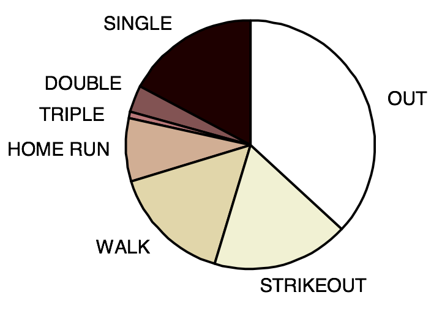
<p class="caption">
Figure 5.1: Spinner constructed based on Mantle’s statistics.
</p>
</div>

<p>The Binomial described in Chapter 4 is an example of a discrete random variable which takes on only values in a list, such as <span class="math inline">\(\{0, 1, ..., 10\}\)</span>. How can one think about probabilities where the random variable is not discrete? As a simple example, consider the experiment of spinning the spinner in Figure 5.2 where the random variable <span class="math inline">\(X\)</span> is the recorded location. Here <span class="math inline">\(X\)</span> is a continuous random variable that can take on any value between 0 and 100.</p>
<div class="figure"><span id="fig:unnamed-chunk-2"></span>
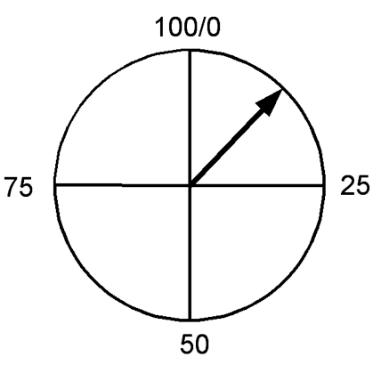
<p class="caption">
Figure 5.2: A spinner with continuous random outcomes.
</p>
</div>

<p>In this chapter, probabilities for a continuous random variable will be shown to be represented by means of a smooth curve where the probability that <span class="math inline">\(X\)</span> falls in a given interval is equal to an area under the curve. Through a series of examples, we will illustrate probability calculations for this type of random variables.</p>
</div>
<div id="the-uniform-distribution" class="section level2">
<h2><span class="header-section-number">5.2</span> The Uniform Distribution</h2>
<p></p>
<p>Consider the spinner experiment described in Section 5.1 where the location of the spinner <span class="math inline">\(X\)</span> can be any number between 0 and 100. Our computer simulated spinning this spinner 20 times with the following results (rounded to the nearest tenth):</p>
<table>
<tbody>
<tr class="odd">
<td align="center">95.0</td>
<td align="center">23.1</td>
<td align="center">60.7</td>
<td align="center">48.6</td>
<td align="center">89.1</td>
<td align="center">76.2</td>
<td align="center">45.6</td>
<td align="center">1.9</td>
<td align="center">93.5</td>
<td align="center">91.7</td>
</tr>
<tr class="even">
<td align="center">82.1</td>
<td align="center">44.5</td>
<td align="center">61.5</td>
<td align="center">79.2</td>
<td align="center">92.2</td>
<td align="center">73.8</td>
<td align="center">17.6</td>
<td align="center">40.6</td>
<td align="center">41.0</td>
<td align="center">89.4</td>
</tr>
</tbody>
</table>
<p>A histogram of these values of <span class="math inline">\(X\)</span> is shown in the Figure 5.3.</p>

<div class="figure"><span id="fig:unnamed-chunk-3"></span>
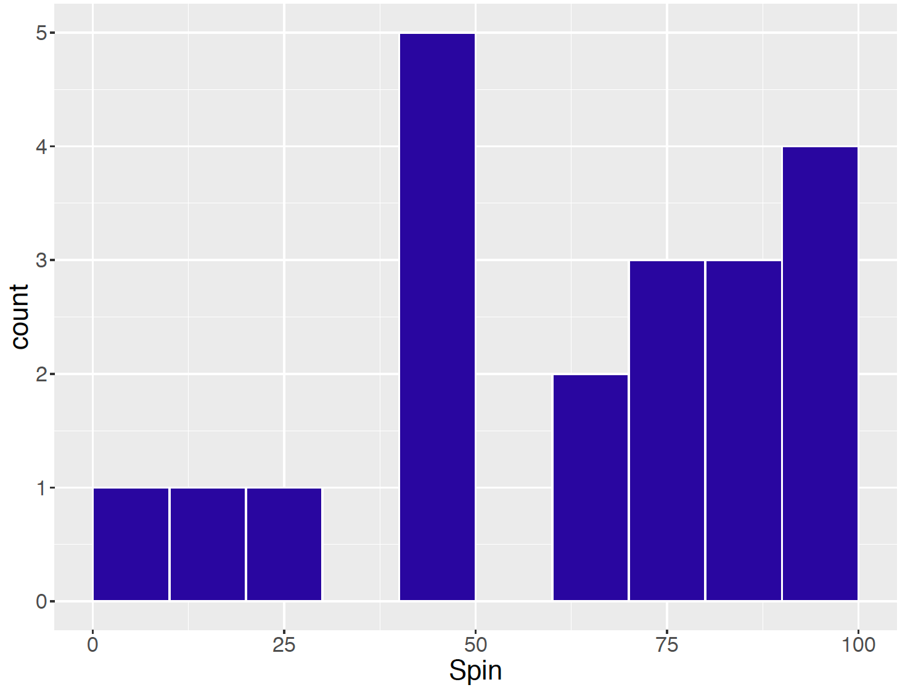
<p class="caption">
Figure 5.3: Histogram of 20 simulated values of a spinner.
</p>
</div>
<p>Although one thinks that any spin between 0 and 100 is equally likely to occur, there does not appear to be any obvious shape of this histogram. But the spinner was only spun 20 times. Let’s try spinning 1000 times– a histogram of the spins is shown in Figure 5.4.</p>
<div class="figure"><span id="fig:unnamed-chunk-4"></span>
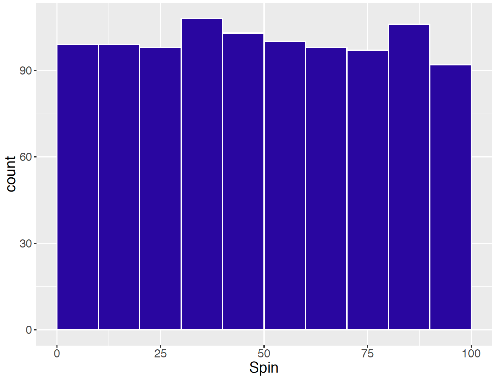
<p class="caption">
Figure 5.4: Histogram of 1000 simulated values of the spinner.
</p>
</div>

<p>Note that since there is a large sample of values, a small interval width was chosen for each bin in the histogram. Now a clearer shape in the histogram can be seen – although there is variation in the bar heights, the general shape of the histogram seems to be pretty flat or Uniform over the entire interval of possible values of <span class="math inline">\(X\)</span> between 0 and 100.</p>
<p>Suppose one was able to spin the spinner a large number of times. If one does this, then the shape of the histogram looks close to the Uniform density shown in Figure 5.5.</p>
<div class="figure"><span id="fig:unnamed-chunk-5"></span>
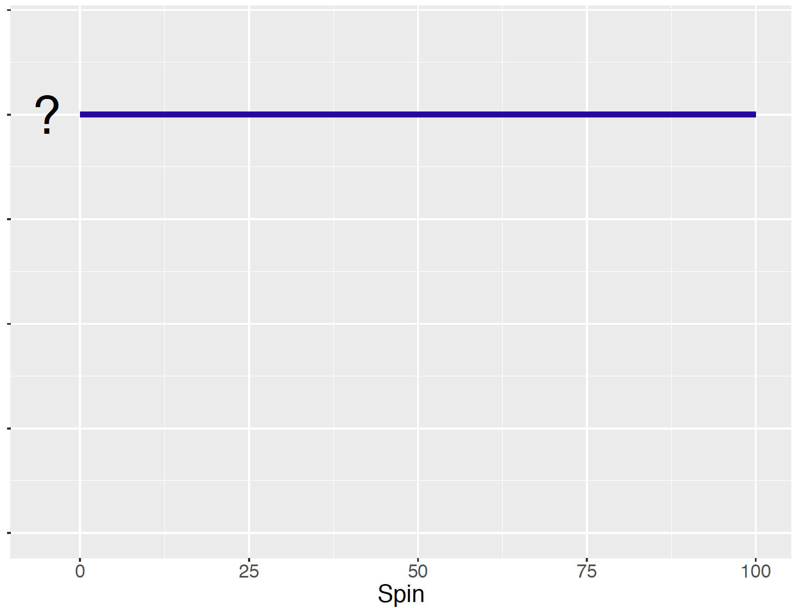
<p class="caption">
Figure 5.5: Shape of the histogram for a large number of simulated values of the spinner.
</p>
</div>

<p>When the random variable <span class="math inline">\(X\)</span> is continuous, such as the case of the spinner result here, then one represents probabilities by means of a smooth curve that is called a density curve; more formally, a probability density curve. How does one find probabilities? When <span class="math inline">\(X\)</span> is continuous, then probabilities are represented by areas under the density curve.</p>
<p>As a simple example, what is the chance that the spinner result falls between 0 and 100? Since the scale of the spinner is from 0 to 100, one knows that all spins must fall in this interval, so the probability of <span class="math inline">\(X\)</span> landing in (0, 100) is 1. This probability is represented by the total area under the flat line between 0 and 100. Since the area of this rectangle is given by height times base, and the base is equal to 100, the height of this density curve must be 1/100 = 0.01. This is the value that should replace the “?” in Figure 5.5. In this case, one says that the spinner result has a Uniform distribution and the curve is a Uniform density.</p>
<p>By means of similar area computations, one finds other probabilities about the spinner location <span class="math inline">\(X\)</span>.</p>
<ol style="list-style-type: decimal">
<li>What is the probability the spin falls between 20 and 60? That is, what is
<span class="math display">\[
P(20 &lt; X &lt; 60)?
\]</span>
This probability is equal to the shaded area under the Uniform density between 20 and 60. See Figure 5.6 Using again the formula for the area of a rectangle, the base is <span class="math inline">\(60 - 20 = 40\)</span> and the height is 0.01, so
<span class="math display">\[
 P(20 &lt; X &lt; 60) = 40 (0.01) = 0.4.
 \]</span></li>
</ol>

<div class="figure"><span id="fig:unnamed-chunk-6"></span>
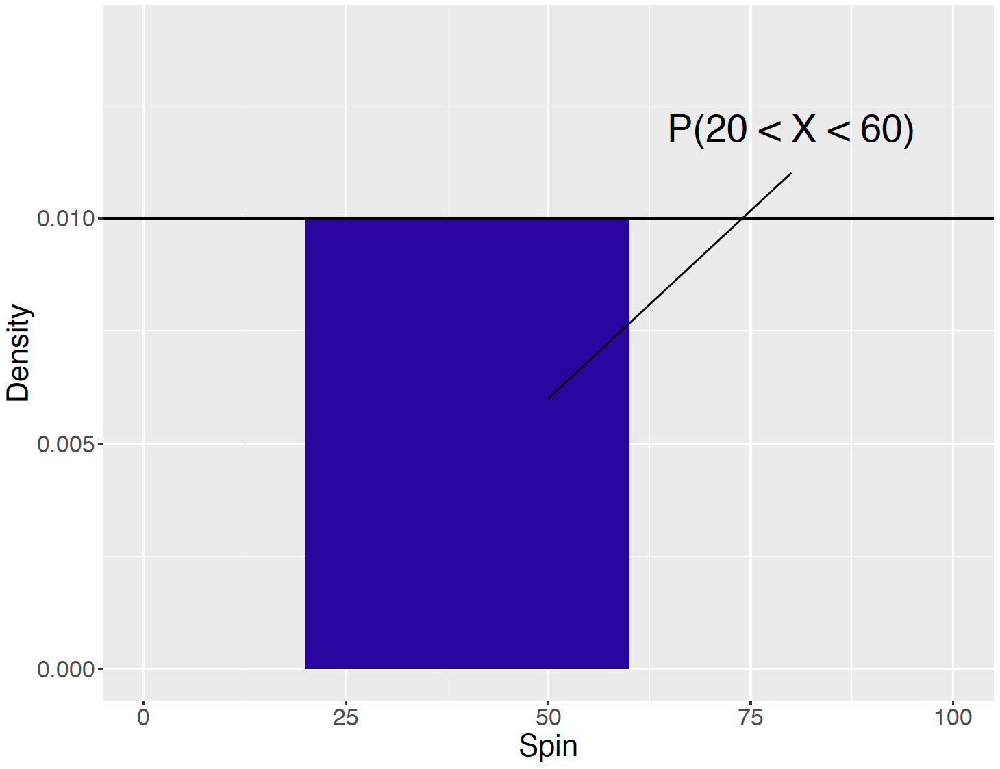
<p class="caption">
Figure 5.6: Illustration of finding the probability of <span class="math inline">\(P(20 &lt; X &lt; 60)\)</span>.
</p>
</div>
<ol start="2" style="list-style-type: decimal">
<li>What is the probability the spin is greater than 80? That is, what is <span class="math inline">\(P(X &gt; 80)\)</span>?
Figure 5.7 shows the area that needs to be computed to find this probability. Note that the area under the curve only between the values 80 and 100 is shaded, since <span class="math inline">\(X\)</span> cannot be larger than 100. Again by finding the area of the shaded rectangle, we see that <span class="math inline">\(P(X &gt; 80)\)</span> = 20 (0.01) = 0.2.</li>
</ol>

<div class="figure"><span id="fig:unnamed-chunk-7"></span>
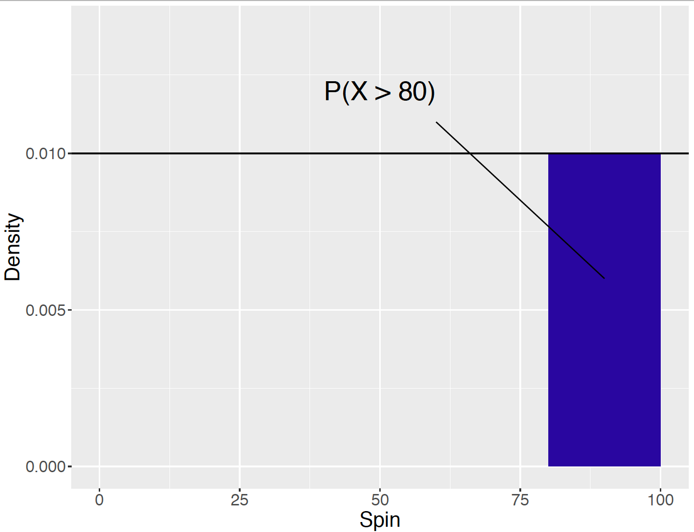
<p class="caption">
Figure 5.7: Illustration of finding the probability of <span class="math inline">\(P(X &gt; 80)\)</span>.
</p>
</div>

<p><strong>Simulating from a Uniform Density</strong></p>
<p>The R function <code>runif()</code> is helpful for simulating from a Uniform density. The arguments are the number of simulations and the minimum and maximum value of the support of the density. Below 50 values of a random spinner are simulated that fall uniformly on the interval from 0 to 50.
The histogram in Figure 5.8 graphs these simulated spins with the Uniform density drawn on top.</p>
<div class="sourceCode" id="cb1"><pre class="sourceCode r"><code class="sourceCode r"><span id="cb1-1"><a href="continuous-distributions.html#cb1-1"></a>spins &lt;-<span class="st"> </span><span class="kw">runif</span>(<span class="dv">50</span>, <span class="dt">min =</span> <span class="dv">0</span>, <span class="dt">max =</span> <span class="dv">50</span>)</span></code></pre></div>

<div class="figure"><span id="fig:unnamed-chunk-9"></span>
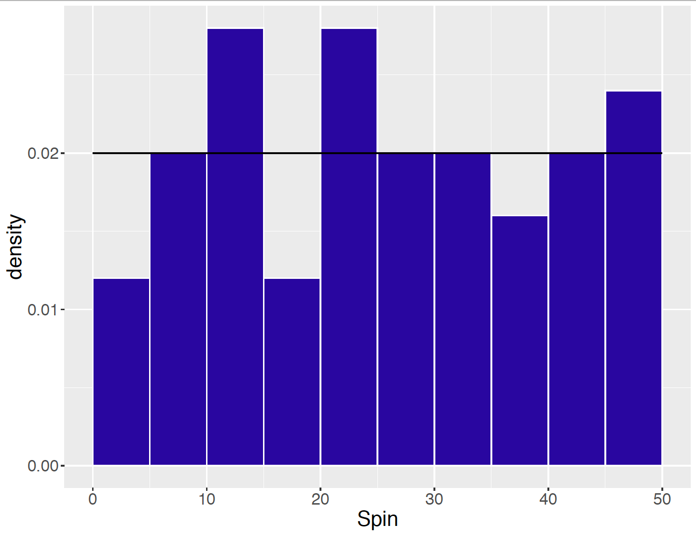
<p class="caption">
Figure 5.8: Histogram of 50 simulated Uniform values.
</p>
</div>
</div>
<div id="probability-density-waiting-for-a-bus" class="section level2">
<h2><span class="header-section-number">5.3</span> Probability Density: Waiting for a Bus</h2>
<p>Consider a random experiment where a continuous random variable <span class="math inline">\(X\)</span> is observed such as the location of the spinner in Section 5.2. Define the <strong>support</strong> of <span class="math inline">\(X\)</span> to be the set of possible values for <span class="math inline">\(X\)</span>. For example, the support of <span class="math inline">\(X\)</span> for the spinner example is the interval (0, 100). To describe probabilities about <span class="math inline">\(X\)</span>, a density function denoted by <span class="math inline">\(f(x)\)</span> is defined. Any function <span class="math inline">\(f\)</span> will not work – one requires that <span class="math inline">\(f\)</span> satisfy two properties:</p>
<p><strong>Property 1</strong>. The probability density <span class="math inline">\(f\)</span> must be <strong>nonnegative</strong> which means that
<span class="math display" id="eq:density1">\[\begin{equation}
 f(x) \ge 0, {\rm for\,  all\,}  x.
 \tag{5.1}
\end{equation}\]</span></p>
<p><strong>Property 2</strong>. The total area under the probability density curve <span class="math inline">\(f\)</span> must be equal to 1. Mathematically,
<span class="math display" id="eq:density2">\[\begin{equation}
 \int_{-\infty}^\infty f(x) dx = 1.
 \tag{5.2}
\end{equation}\]</span></p>
<p>To illustrate a probability density, suppose that a professor has a class that meets three times a week. To get to class, the professor walks to a bus stop and wait for a bus to go to school. From past experience, the professor knows that she can wait any time between 0 and 10 minutes for the bus, and she knows that each waiting time between 0 and 10 minutes is equally likely.</p>
<p>For a given week, what’s the chance that her longest wait will be under 7 minutes?</p>
<p>Let <span class="math inline">\(W\)</span> denote her longest waiting time for the week. One can show that the density for <span class="math inline">\(W\)</span> is given by
<span class="math display">\[
f(w) = \frac{3w^2}{1000}, 0 &lt; w &lt; 10.
\]</span>
This density for this longest waiting time is shown in Figure 5.9.</p>

<div class="figure"><span id="fig:unnamed-chunk-10"></span>
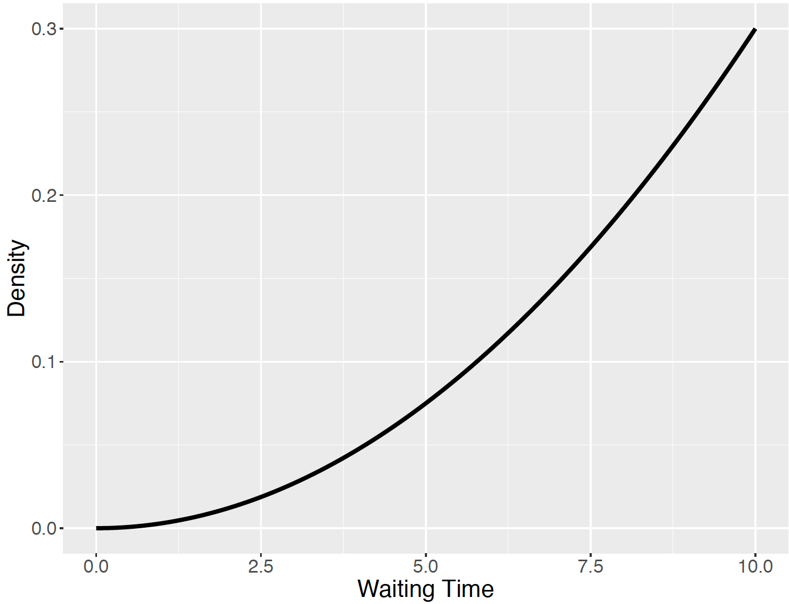
<p class="caption">
Figure 5.9: Density curve for the longest waiting time <span class="math inline">\(W\)</span>.
</p>
</div>
<p>Before we go any further, one should check if this is indeed a legitimate probability density:</p>
<ol style="list-style-type: decimal">
<li>Note from the graph that the density does not take on negative values, so the first property is satisfied.</li>
<li>Second, for it to be a probability density, the entire area under the curve must be equal to 1. One can check this by finding the integral of the density between 0 and 10 (the region where the density if positive):
<span class="math display">\[
\int_0^{10} \frac{3w^2}{1000} dw = \frac{w^3}{1000}\Big|^{10}_0 = \frac{10^3}{1000} - \frac{0^3}{1000} = 1.
\]</span></li>
</ol>
<p>The entire area under the curve is indeed equal to 1, so <span class="math inline">\(f\)</span> is a legitimate probability density.
Now that <span class="math inline">\(f\)</span> is known to be a probability density, one can use it to find probabilities. To find the probability that this longest waiting time is less than 7 minutes, <span class="math inline">\(P(W &lt; 7)\)</span>, one wishes to compute the area under the density curve between 0 and 7, as shown in Figure 5.10.</p>

<div class="figure"><span id="fig:unnamed-chunk-11"></span>
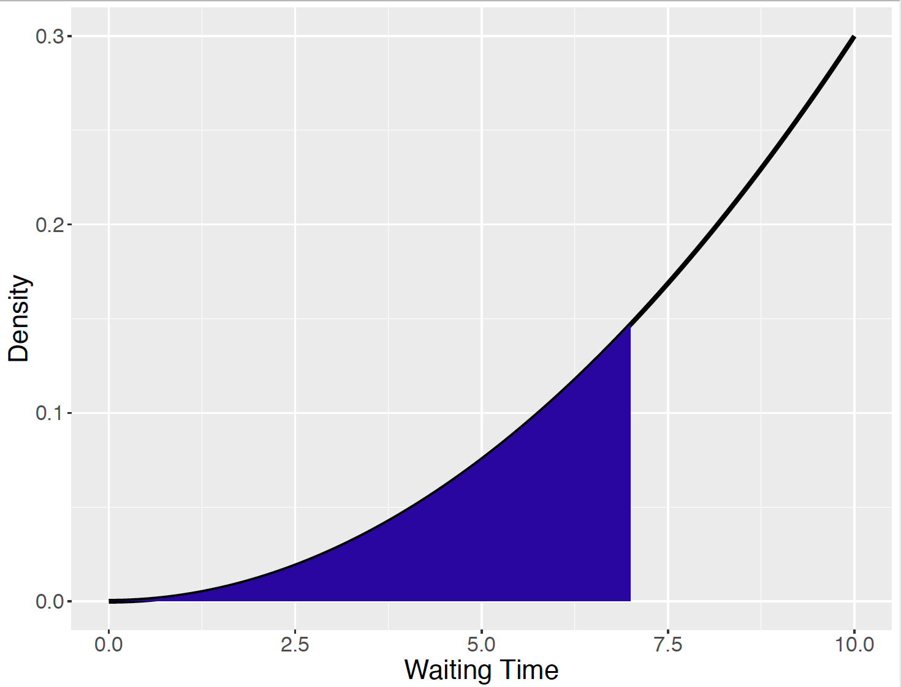
<p class="caption">
Figure 5.10: Density curve for the longest waiting time <span class="math inline">\(W\)</span>, and <span class="math inline">\(P(W &lt; 7)\)</span>.
</p>
</div>
<p>This is equivalent to the integral
<span class="math display">\[
\int_0^{7} \frac{3w^2}{1000} dw 
\]</span>
and, by evaluating this, one obtains the probability
<span class="math display">\[
\int_0^{7} \frac{3w^2}{1000} dw = \frac{w^3}{1000}\Big|^{7}_0 = \frac{7^3}{1000} - \frac{0^3}{1000} = 0.343.
\]</span></p>
<p>Suppose one is interested in the probability that the longest waiting time is between 6 and 8 minutes. This is represented by the shaded area in Figure 5.11.</p>

<div class="figure"><span id="fig:unnamed-chunk-12"></span>
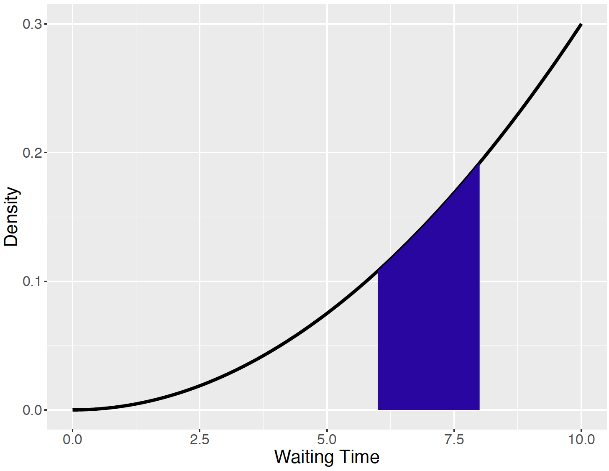
<p class="caption">
Figure 5.11: Density curve for the longest waiting time <span class="math inline">\(W\)</span>, and <span class="math inline">\(P(6 &lt; W &lt; 8)\)</span>.
</p>
</div>
<p>To compute this area, one finds the integral of the density between 6 and 8:
<span class="math display">\[
\int_6^{8} \frac{3w^2}{1000} dw = \frac{w^3}{1000}\Big|^{8}_6 = \frac{8^3}{1000} - \frac{6^3}{1000} = 0.296.
\]</span></p>

<p><strong>Simulating Waiting Times</strong></p>
<p>Recall that the waiting time variable <span class="math inline">\(W\)</span> was defined as the longest waiting time for the week where each of the separate waiting times has a Uniform distribution from 0 to 10 minutes. By simulating the process, one simulate values of <span class="math inline">\(W\)</span>. By use of three applications of <code>runif()</code> one simulates 1000 waiting times for Monday, Wednesday, and Friday. The <code>pmax()</code> function is used to simulate the longest waiting time for each group of waiting times.</p>
<div class="sourceCode" id="cb2"><pre class="sourceCode r"><code class="sourceCode r"><span id="cb2-1"><a href="continuous-distributions.html#cb2-1"></a>wait_monday &lt;-<span class="st"> </span><span class="kw">runif</span>(<span class="dv">1000</span>, <span class="dt">min =</span> <span class="dv">0</span>, <span class="dt">max =</span> <span class="dv">10</span>)</span>
<span id="cb2-2"><a href="continuous-distributions.html#cb2-2"></a>wait_wednesday &lt;-<span class="st"> </span><span class="kw">runif</span>(<span class="dv">1000</span>, <span class="dt">min =</span> <span class="dv">0</span>, <span class="dt">max =</span> <span class="dv">10</span>)</span>
<span id="cb2-3"><a href="continuous-distributions.html#cb2-3"></a>wait_friday &lt;-<span class="st"> </span><span class="kw">runif</span>(<span class="dv">1000</span>, <span class="dt">min =</span> <span class="dv">0</span>, <span class="dt">max =</span> <span class="dv">10</span>)</span>
<span id="cb2-4"><a href="continuous-distributions.html#cb2-4"></a>longest_wait &lt;-<span class="st"> </span><span class="kw">pmax</span>(wait_monday, </span>
<span id="cb2-5"><a href="continuous-distributions.html#cb2-5"></a>                     wait_wednesday,</span>
<span id="cb2-6"><a href="continuous-distributions.html#cb2-6"></a>                     wait_friday)</span></code></pre></div>
<p>Figure 5.12 shows 1000 simulated values of <span class="math inline">\(W\)</span> and the density function <span class="math inline">\(3w^2 / 1000\)</span> is drawn on top. It appears that the histogram is a good match to the actual density function.</p>

<div class="figure"><span id="fig:unnamed-chunk-14"></span>
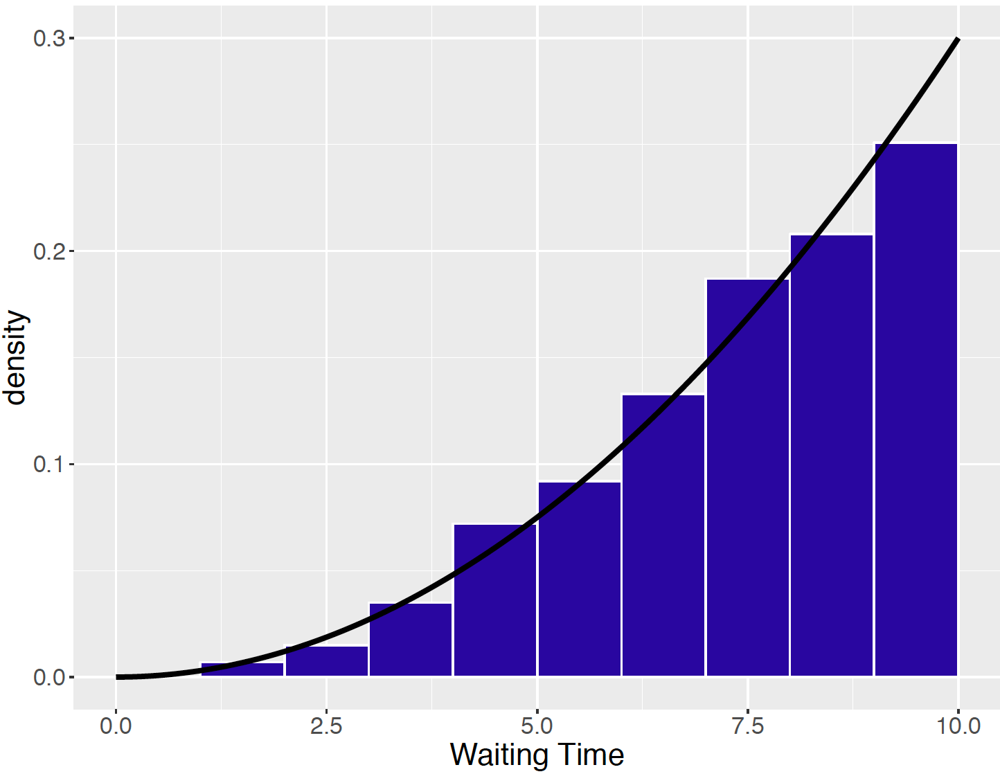
<p class="caption">
Figure 5.12: Histogram of 1000 simulated values of <span class="math inline">\(W\)</span> with the density function drawn on top.
</p>
</div>
</div>
<div id="the-cumulative-distribution-function" class="section level2">
<h2><span class="header-section-number">5.4</span> The Cumulative Distribution Function</h2>
<p>To find any probability about the maximum waiting time, one computes an area under the curve that is equivalent to integrating the density curve over a region. But there is a basic function that can be computed at the beginning that will simplify these probability computations.</p>
<p>Choose an arbitrary point <span class="math inline">\(x\)</span> – the cumulative distribution function at <span class="math inline">\(x\)</span>, or cdf for short, is the probability that <span class="math inline">\(W\)</span> is less than or equal to <span class="math inline">\(x\)</span>:
<span class="math display" id="eq:cdf">\[\begin{equation}
F(x) = P(W \le x) = \int_{-\infty}^x f(w) dw.
\tag{5.3}
\end{equation}\]</span>
Here suppose one chooses a value of <span class="math inline">\(x\)</span> in the interval (0, 10). Then <span class="math inline">\(F(x)\)</span> would be the area under the density curve between 0 and <span class="math inline">\(x\)</span> shown in Figure 5.13.</p>

<div class="figure"><span id="fig:unnamed-chunk-15"></span>
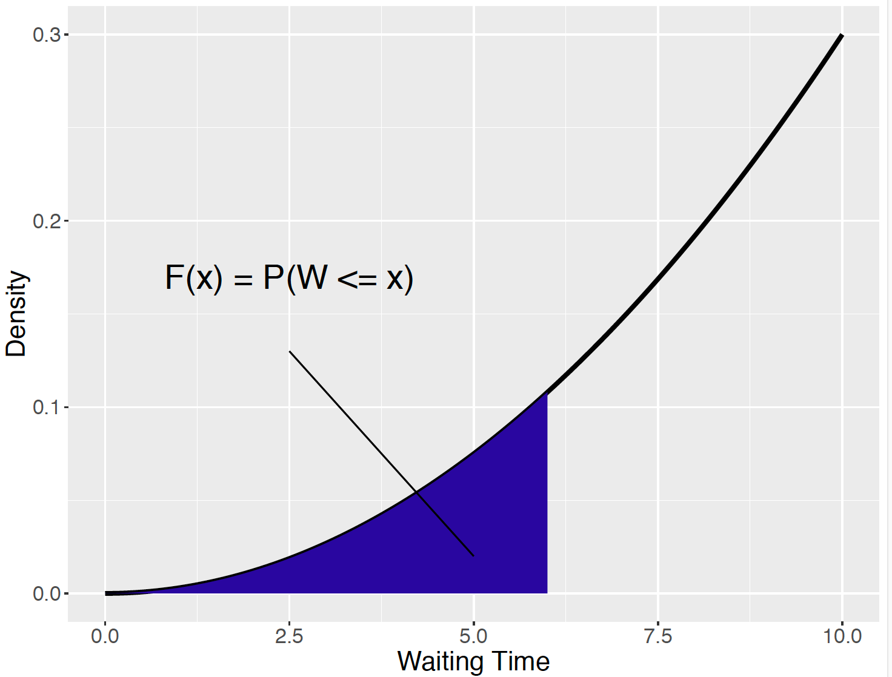
<p class="caption">
Figure 5.13: Illustration of the cumulative density function.
</p>
</div>
<p>Writing this area as an integral, one computes <span class="math inline">\(F(x)\)</span> as
<span class="math display">\[
F(x) = P(W \le x) = \int_0^x \frac{3w^2}{1000} dw = \frac{w^3}{1000}\Big|^{x}_0 = \frac{x^3}{1000}.
\]</span>
This formula is valid for any value of x in the interval (0, 10).</p>
<p>In fact, <span class="math inline">\(F(x)\)</span> is defined for all values of <span class="math inline">\(x\)</span> on the real line.</p>
<ul>
<li>If <span class="math inline">\(x\)</span> is a value smaller or equal to 0, then we see from the figure that the probability that <span class="math inline">\(W\)</span> is smaller than <span class="math inline">\(x\)</span> is equal to 0. So <span class="math inline">\(F(x) = 0\)</span> for <span class="math inline">\(x \le 0\)</span>.</li>
<li>On the other hand, if <span class="math inline">\(x\)</span> is greater or equal to 10, then the probability that <span class="math inline">\(W\)</span> is smaller than <span class="math inline">\(x\)</span> is 1. So <span class="math inline">\(F(x) = 1\)</span> for <span class="math inline">\(x \ge 10\)</span>.</li>
</ul>
<p>Putting all together, one sees that the cdf <span class="math inline">\(F\)</span> is given by
<span class="math display">\[
F(x) = 
 \begin{cases}
                                   0, &amp; x \le 0  \\
                                   x^3 / 1000, &amp; 0 &lt; x &lt; 10 \\
  1, &amp; x \ge 10,
  \end{cases}
\]</span>
illustrated in Figure 5.14}.</p>

<div class="figure"><span id="fig:unnamed-chunk-16"></span>
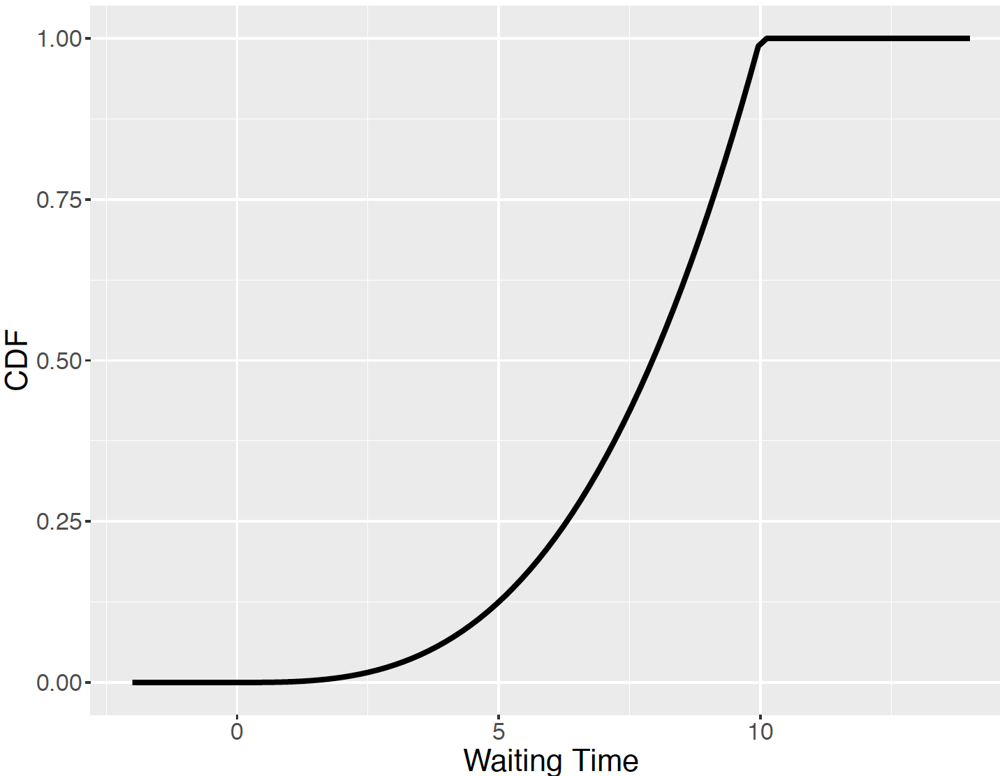
<p class="caption">
Figure 5.14: The cumulative density function, <span class="math inline">\(F(x)\)</span>, of the bus waiting example.
</p>
</div>
</div>
<div id="finding-probabilities-using-the-cdf" class="section level2">
<h2><span class="header-section-number">5.5</span> Finding probabilities using the CDF</h2>
<p>Once we have computed the cdf function <span class="math inline">\(F\)</span>, probabilities are found simply by evaluating <span class="math inline">\(F\)</span> at different points. Fortunately, no additional integration is needed.</p>
<p>For example, to find the probability that the maximum waiting time <span class="math inline">\(W\)</span> is less than equal to 6 minutes, one just computes <span class="math inline">\(F(6) = P(W \le 6) = 6^3 / 1000 = 0.216\)</span> which is shown in Figure 5.15.</p>

<div class="figure"><span id="fig:unnamed-chunk-17"></span>
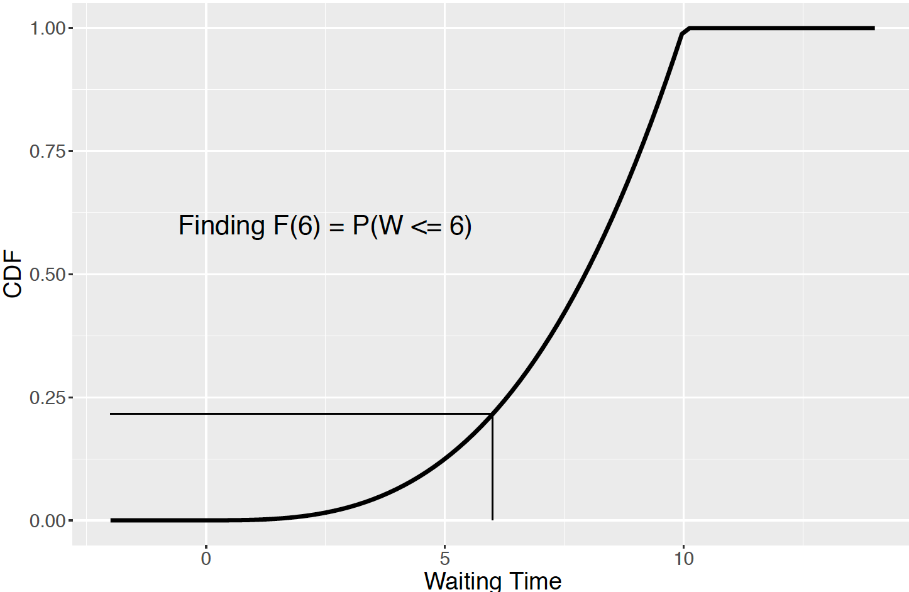
<p class="caption">
Figure 5.15: The cumulative density function <span class="math inline">\(F(x)\)</span> and evaluation of <span class="math inline">\(F(6) = P(W &lt;= 6)\)</span>.
</p>
</div>
<p>To compute the probability that the maximum waiting time exceeds 8 minutes, first note that “exceeding 8 minutes” is the complement event to “less than or equal to 8 minutes”, and so
<span class="math display">\[
P(W &gt; 8) = 1 - P(W \le 8)  = 1 - F(8) = 1 - \frac{8^3}{1000} = 0.488.
\]</span>
Likewise, if one is interested in the chance that the waiting time <span class="math inline">\(W\)</span> falls between 2 and 4, represent the probability as the difference of two “less-than” probabilities, and then subtract the two values of F.
<span class="math display">\[
P(2 &lt; W &lt; 4) = P(W \le 4) - P(W \le 2)  = F(4) - F(2) = \frac{4^3}{1000} - \frac{2^3}{1000} = 0.056.
\]</span></p>

<p><strong>Computing Probabilities by Simulation</strong></p>
<p>For the waiting for a bus example, the variable <code>longest_wait</code> contains 1000 simulated values of our longest waiting time. This sample is used to compute approximate probabilities. To illustrate, to find the probability that the longest wait exceeds 8 minutes, one finds the proportion of simulated values of <span class="math inline">\(W\)</span> that exceeds 8.</p>
<div class="sourceCode" id="cb3"><pre class="sourceCode r"><code class="sourceCode r"><span id="cb3-1"><a href="continuous-distributions.html#cb3-1"></a><span class="kw">mean</span>(longest_wait <span class="op">&gt;</span><span class="st"> </span><span class="dv">8</span>)</span></code></pre></div>
<pre><code>## [1] 0.468</code></pre>
<p>In a similar fashion one approximates the probability a longest waiting time falls between 6 and 10 minutes.</p>
<div class="sourceCode" id="cb5"><pre class="sourceCode r"><code class="sourceCode r"><span id="cb5-1"><a href="continuous-distributions.html#cb5-1"></a><span class="kw">mean</span>(longest_wait <span class="op">&gt;</span><span class="st"> </span><span class="dv">6</span> <span class="op">&amp;</span><span class="st"> </span>longest_wait <span class="op">&lt;</span><span class="st"> </span><span class="dv">10</span>)</span></code></pre></div>
<pre><code>## [1] 0.783</code></pre>
</div>
<div id="summarizing-a-continuous-random-variable" class="section level2">
<h2><span class="header-section-number">5.6</span> Summarizing a Continuous Random Variable</h2>
<p><strong>Mean and standard deviation</strong></p>
<p>One is interested in summarizing a continuous random variable. Natural summaries are given by the mean <span class="math inline">\(\mu\)</span> and the standard deviation <span class="math inline">\(\sigma\)</span>, where these quantities are defined in a similar manner as for a discrete random variable, with the exception that summations are replaced by integrals.</p>
<p>The mean <span class="math inline">\(\mu\)</span>, or equivalently the expected value of <span class="math inline">\(X\)</span>, is given by
<span class="math display" id="eq:densitymean">\[\begin{equation}
\mu = E(X) = \int_{-\infty}^\infty x f(x) dx.
\tag{5.4}
\end{equation}\]</span>
Just as in the discrete random variable case, there is an attractive interpretation of <span class="math inline">\(\mu\)</span>. If one is able to observe a large number of values of <span class="math inline">\(X\)</span>, then <span class="math inline">\(\mu\)</span> will be approximately equal to the sample mean <span class="math inline">\(\bar X\)</span> of these random values of <span class="math inline">\(X\)</span>.</p>
<p>To define the spread of the values of <span class="math inline">\(X\)</span>, one first computes the average squared deviation about the mean, the variance,
<span class="math display" id="eq:densityvar">\[\begin{equation}
 \sigma^2 = Var(X) = E(X - \mu)^2 = \int_{-\infty}^\infty (x - \mu)^2 f(x) dx.
 \tag{5.5}
\end{equation}\]</span>
The standard deviation of <span class="math inline">\(X\)</span>, <span class="math inline">\(\sigma\)</span>, is defined to be the square root of the variance.</p>
<p>Let’s illustrate the computation of the mean and standard deviation for the bus waiting time problem. Using the definition of <span class="math inline">\(f\)</span>, one gets that the mean is equal to
<span class="math display">\[
 \mu = \int_0^{10} x \left(\frac{3x^2}{1000}\right) dx.
 \]</span>
Performing the integration, one gets
<span class="math display">\[
 \mu = \int_0^{10} x \left(\frac{3x^2}{1000}\right) dx = \frac{3 x^4}{4000} \Big|^{10}_0 = \frac{3 (10)^4}{1000} = 7.5.
\]</span>
On, the average, one expects the longest wait in a week to be 7.5 minutes.</p>
<p>The computation of the variance is a bit more tedious, but straightforward.<br />
<span class="math display">\[
 \sigma^2 = \int_0^{10} (x -\mu)^2  \left(\frac{3x^2}{1000}\right) dx = 3.75.
 \]</span>
So the standard deviation of <span class="math inline">\(X\)</span> is <span class="math inline">\(\sigma = \sqrt{3.75} = 1.94\)</span>.</p>

<p><strong>Computing the Mean and Standard Deviation by Simulation</strong></p>
<p>Earlier, we demonstrated simulating 1000 values of the longest waiting time <span class="math inline">\(W\)</span>. To check the computations of the mean <span class="math inline">\(\mu\)</span> and standard deviation <span class="math inline">\(\sigma\)</span>, one computes the sample mean and standard deviation of the simulated values.</p>
<div class="sourceCode" id="cb7"><pre class="sourceCode r"><code class="sourceCode r"><span id="cb7-1"><a href="continuous-distributions.html#cb7-1"></a><span class="kw">mean</span>(longest_wait)</span></code></pre></div>
<pre><code>## [1] 7.467663</code></pre>
<div class="sourceCode" id="cb9"><pre class="sourceCode r"><code class="sourceCode r"><span id="cb9-1"><a href="continuous-distributions.html#cb9-1"></a><span class="kw">sd</span>(longest_wait)</span></code></pre></div>
<pre><code>## [1] 1.928283</code></pre>
<p>One sees that these empirical values are close approximations to the exact values <span class="math inline">\(\mu = 7.5\)</span> and <span class="math inline">\(\sigma = 1.94\)</span>.</p>
<p><strong>Percentiles</strong></p>
<p>Another useful summary of a continuous random variable is a percentile. The 70th percentile, for example, is the value of <span class="math inline">\(X\)</span>, call it <span class="math inline">\(x\)</span>, such that 70% of the probability is to the left, shown in Figure 5.16. That is, the 70th percentile, call it <span class="math inline">\(x_{70}\)</span>, satisfies the equation
<span class="math display">\[
P(X \le x_{70}) = 0.70.
\]</span></p>

<div class="figure"><span id="fig:unnamed-chunk-21"></span>
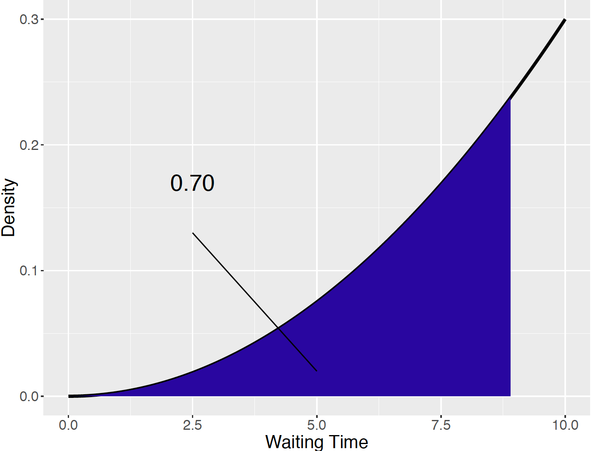
<p class="caption">
Figure 5.16: Illustration of the 70th percentile.
</p>
</div>
<p>Since one recognizes the left hand side of the equation as equivalent to the cdf <span class="math inline">\(F\)</span> (which already has been computed as <span class="math inline">\(x^3/1000\)</span>), the equation is written as
<span class="math display">\[
 F(x_{70}) = 0.70,
 \]</span>
that is,
<span class="math display">\[
 \frac{x_{70}^3}{1000} = 0.70.
 \]</span>
To find the 70th percentile, the above equation is solved for <span class="math inline">\(x_{70}\)</span> – after some algebra, we get
<span class="math display">\[
 x_{70} = \sqrt[3]{700} = 8.88.
 \]</span>
This means that if one waits many weeks for this bus, approximately 70% of the longest waiting times will be shorter than 8.88 minutes.</p>

<p><strong>Computing Percentiles by Simulation</strong></p>
<p>For the waiting for a bus example, the variable <code>longest\wait</code> contains 1000 simulated values of our longest waiting time. This sample is used to compute approximate percentiles by computing sample percentiles of the simulated values.
For example, by use of the <code>quantile()</code> function, one finds that the 10th and 90th percentiles of <span class="math inline">\(W\)</span> are approximately 4.80 and 9.66 minutes.</p>
<div class="sourceCode" id="cb11"><pre class="sourceCode r"><code class="sourceCode r"><span id="cb11-1"><a href="continuous-distributions.html#cb11-1"></a><span class="kw">quantile</span>(longest_wait, <span class="kw">c</span>(<span class="fl">0.1</span>, <span class="fl">0.9</span>))</span></code></pre></div>
<pre><code>##      10%      90% 
## 4.718095 9.595449</code></pre>
<p>The probability a longest waiting time is between 4.79 and 9.66 minutes is approximately 0.80.</p>
</div>
<div id="normal-distribution" class="section level2">
<h2><span class="header-section-number">5.7</span> Normal Distribution</h2>
<p><strong>Normal probability curve</strong></p>
<p>One of the most popular races in the United States is marathon, a grueling 26-mile run. Most people are familiar with the Boston Marathon that is held in Boston, Massachusetts every April. But other cities in the U.S. hold yearly marathons. Here we look at data collected from Grandma’s Marathon that is held in Duluth, Minnesota every June.</p>
<p>In the year 2003, there were 2515 women who completed Grandma’s Marathon. The completion times in minutes for all of these women can be downloaded from the marathon’s website. A histogram of these times, measured in minutes, is shown in Figure 5.17.</p>

<div class="figure"><span id="fig:unnamed-chunk-23"></span>
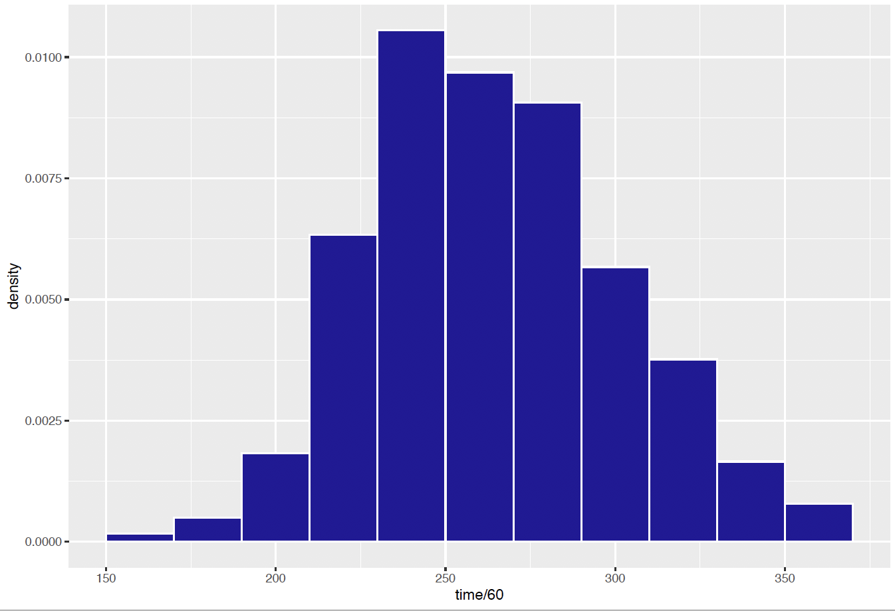
<p class="caption">
Figure 5.17: Histogram of women’s completion times in the Grandma’s Marathon.
</p>
</div>
<p>Note that these measured times have a bell shape. Figure 5.18 superimposes a Normal curve on top of this histogram. Note that this curve is a pretty good match to the histogram. In fact, data like this marathon time data that are measurements are often well approximated by a Normal curve.</p>

<div class="figure"><span id="fig:unnamed-chunk-24"></span>

<p class="caption">
Figure 5.18: Histogram of women’s completion times in the Grandma’s Marathon, with a Normal curve on top.
</p>
</div>
<p>A Normal density curve has the general form
<span class="math display" id="eq:normaldensity">\[\begin{equation}
 f(x) = \frac{1}{\sqrt{2 \pi} \sigma} \exp\left\{-\frac{(x - \mu)^2}{2 \sigma^2}\right\}, -\infty &lt; x &lt; \infty.
 \tag{5.6}
 \end{equation}\]</span>
This density curve is described by two parameters – the mean <span class="math inline">\(\mu\)</span> and the standard deviation <span class="math inline">\(\sigma\)</span>. The mean <span class="math inline">\(\mu\)</span> is the center of the curve. Looking at the Normal curve above, one sees that the curve is centered about 270 minutes – actually the mean of the Normal curve is <span class="math inline">\(\mu\)</span> = 274. The number <span class="math inline">\(\sigma\)</span>, the standard deviation, describes the spread of the curve. Here the Normal curve standard deviation is <span class="math inline">\(\sigma\)</span> = 43. If one knows the mean and standard deviation of the Normal curve, one can make reasonable predictions where the majority of times of the women runners will fall.</p>

<p>The famous Normal curve was independently discovered by several scientists. Abraham De Moivre in the 18th century showed that a Binomial probability for a large number of trials <span class="math inline">\(n\)</span> could be approximated by a Normal curve. Pierre Simon Laplace and Carl Friedrich Gauss also made important discoveries about this curve. By the 19th century, it was believed by some scientists such as Adolphe Quetelet that the Normal curve would represent the distribution of any group of homogeneous measurements. To illustrate his thinking, Quetelet considered the frequency measurements for the chest circumference measurements (in inches) for 5738 Scottish soldiers taken from the Edinburgh Medical and Surgical Journal (1817). A histogram of the chest measurements is shown in Figure 5.19. Quetelet’s beliefs were a bit incorrect – any group of measurements will not necessarily be Normal-shaped. However, it is generally true that a distribution of physical measurements from a homogeneous group, say heights of American women or foot lengths of Chinese men will generally have this bell shape.</p>

<div class="figure"><span id="fig:unnamed-chunk-25"></span>
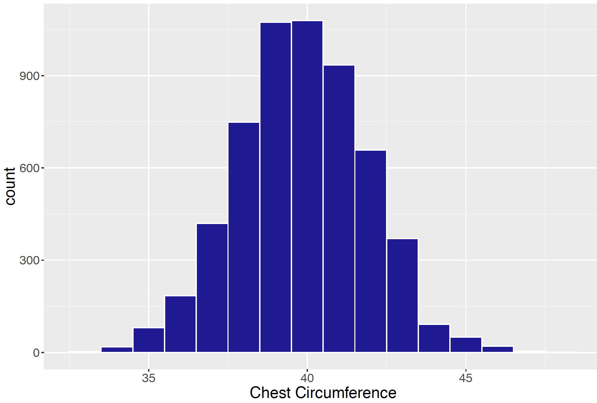
<p class="caption">
Figure 5.19: Histogram of chest circumference measurements of Scottish soldiers.
</p>
</div>
<p>In the previous sections of this chapter, the notion of a continuous random variable was introduced. Here the Normal curve is introduced that is a popular model for representing the distribution of a measurement random variable. Also it will be seen that the Normal curve is helpful for computing Binomial probabilities and for representing the distributions of means taken from a random sample.</p>

<p>Suppose that the Normal density with <span class="math inline">\(\mu\)</span> = 274 minutes and <span class="math inline">\(\sigma\)</span>= 43 minutes represents the distribution of women racing times. Say one is interested in the probability that a runner completes the race less than 4 hours or 240 minutes. One computes this probability by finding an area under the Normal curve. Specifically, as indicated in Figure 5.20, this probability is the area under the curve for all times less than 240 minutes.</p>

<div class="figure"><span id="fig:unnamed-chunk-26"></span>
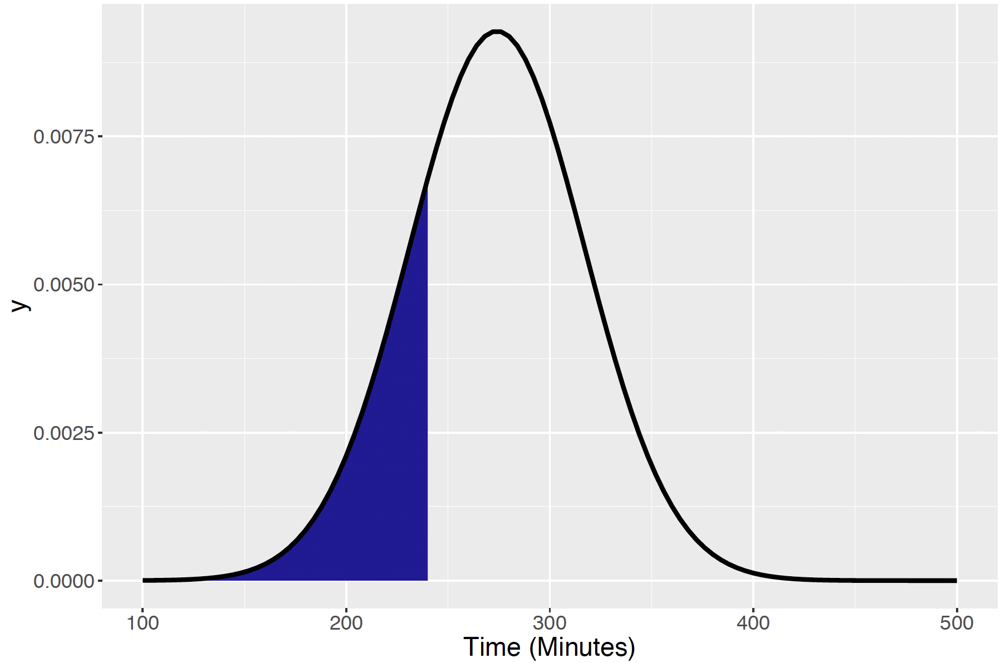
<p class="caption">
Figure 5.20: Normal density with mean 274 and standard deviation 43, with illustration of the area under the curve less than 240 (minutes).
</p>
</div>
<p><strong>Normal Probability Calculations</strong></p>
<p>One expresses this area as the integral
<span class="math display">\[
P(X \le 240) = \int_{-\infty}^{240} \frac{1}{\sqrt{2 \pi} \sigma} \exp\left\{-\frac{(x - \mu)^2}{2 \sigma^2}\right\} dx
 \]</span>
but unfortunately one cannot integrate this function analytically (like was done for a Uniform density) to find the probability. Instead one finds this area by use of the R <code>pnorm()</code> function in R. This function is used for three examples, illustrating the computation of three types of areas.</p>
<p>Returning to our example, recall the distribution of marathon times is approximately Normally distributed with mean <span class="math inline">\(\mu\)</span> = 274 and standard deviation <span class="math inline">\(\sigma\)</span> = 43.</p>
<p><strong>Finding a “less than” area.</strong></p>
<p>Suppose one is interested in the probability that a woman marathon runner completes the race in under 240 minutes.<br />
That is, one wishes to find <span class="math inline">\(P(X &lt; 240)\)</span> which is the area under the Normal curve to the left of 240. The function value  gives the value of the cdf of a Normal random variable with mean <span class="math inline">\(\mu = a\)</span> and <span class="math inline">\(\sigma = s\)</span> evaluated at the value <span class="math inline">\(x\)</span>. For our example, the mean and standard deviation are given by 274 and 43, respectively, so the desired probability is given by</p>
<div class="sourceCode" id="cb13"><pre class="sourceCode r"><code class="sourceCode r"><span id="cb13-1"><a href="continuous-distributions.html#cb13-1"></a><span class="kw">pnorm</span>(<span class="dv">240</span>, <span class="dv">274</span>, <span class="dv">43</span>)</span></code></pre></div>
<pre><code>## [1] 0.2145602</code></pre>
<p><strong>Finding a “between two values” area.</strong></p>
<p>Suppose one is interested in computing the probability that a marathon runner completes a race between two values, such as <span class="math inline">\(P(230 &lt; X &lt; 280)\)</span>, shown in Figure 5.21.</p>
<div class="figure"><span id="fig:unnamed-chunk-28"></span>
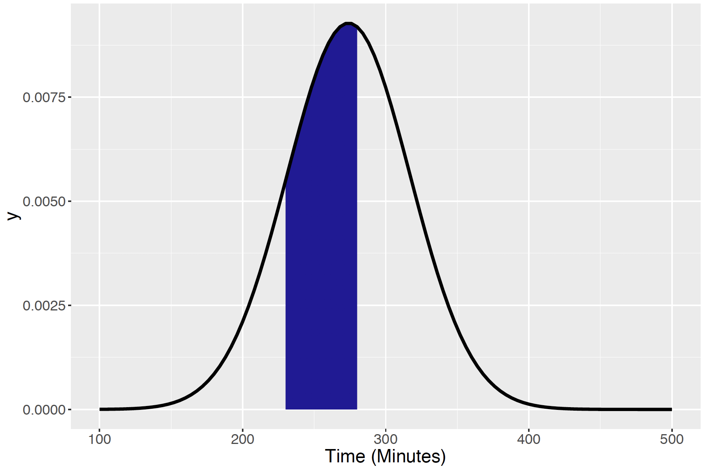
<p class="caption">
Figure 5.21: Normal density with mean 274 and standard deviation 43, with illustration of the area under the curve between 230 and 280 (minutes).
</p>
</div>

<p>One writes this probability as the difference of two “less than” probabilities:
<span class="math display">\[\begin{align*}
P(230 &lt; X &lt; 280)  &amp;= P(X &lt; 280) - P(X &lt; 230) \\
  &amp;= F(280) - F(230), 
\end{align*}\]</span>
where <span class="math inline">\(F(x)\)</span> is the cdf of a Normal(274, 43) random variable evaluated at <span class="math inline">\(x\)</span>. Therefore, by use of the  function, this probability is equal to</p>
<div class="sourceCode" id="cb15"><pre class="sourceCode r"><code class="sourceCode r"><span id="cb15-1"><a href="continuous-distributions.html#cb15-1"></a><span class="kw">pnorm</span>(<span class="dv">280</span>, <span class="dv">274</span>, <span class="dv">43</span>) <span class="op">-</span><span class="st"> </span><span class="kw">pnorm</span>(<span class="dv">230</span>, <span class="dv">274</span>, <span class="dv">43</span>)</span></code></pre></div>
<pre><code>## [1] 0.4023928</code></pre>
<p><strong>Finding a “greater than” area.</strong></p>
<p>Last, sometimes one will be interested in the probability that <span class="math inline">\(X\)</span> is greater than some value, such as <span class="math inline">\(P(X &gt; 300)\)</span>, the probability a runner takes more than 300 minutes to complete the race, shown in Figure 5.22.</p>

<div class="figure"><span id="fig:unnamed-chunk-30"></span>
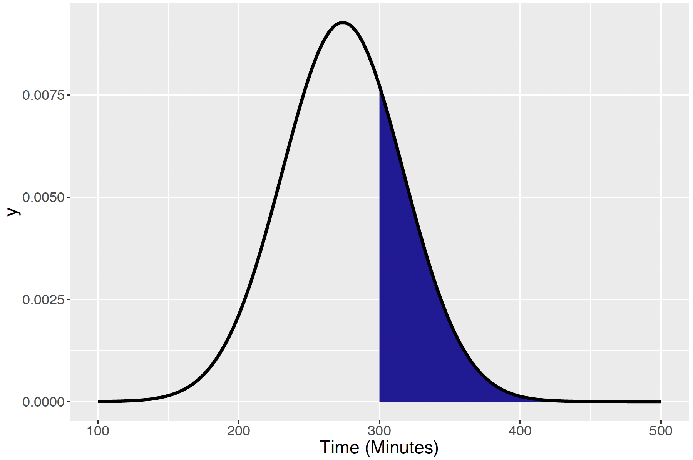
<p class="caption">
Figure 5.22: Normal density with mean 274 and standard deviation 43, with illustration of the area under the curve greater than 300 (minutes).
</p>
</div>
<p>This probability is found by the complement property of probability, that
<span class="math display">\[\begin{align*}
P(X &gt; 300)  &amp;= 1 - P(X \le 300) \\
  &amp;= 1 - F(300).
\end{align*}\]</span>
Therefore, one uses the  function to compute the probability that <span class="math inline">\(X\)</span> is smaller than 300, and then subtract the answer from 1.</p>
<div class="sourceCode" id="cb17"><pre class="sourceCode r"><code class="sourceCode r"><span id="cb17-1"><a href="continuous-distributions.html#cb17-1"></a><span class="dv">1</span> <span class="op">-</span><span class="st"> </span><span class="kw">pnorm</span>(<span class="dv">300</span>, <span class="dv">274</span>, <span class="dv">43</span>) </span></code></pre></div>
<pre><code>## [1] 0.2727054</code></pre>
<p><strong>Computing Normal percentiles</strong></p>
<p>In the marathon completion times example, we were interested in computing a probability that was equivalent to finding an area under the Normal curve. A different problem is to compute a percentile of the distribution. In the marathon example, suppose that t-shirts will be given away to the runners who get the 25% fastest times. How fast does a runner need to run the race to get a t-shirt?</p>
<p>Here one wishes to compute the 25th percentile of the distribution of times. This is a time, call it <span class="math inline">\(x_{25}\)</span>, such that 25 percent of all times are smaller than <span class="math inline">\(x_{25}\)</span>. This is shown graphically in Figure 5.23.</p>
<p>Equivalently, we wish to find the value <span class="math inline">\(x_{25}\)</span> such that
<span class="math display">\[
P(X \le x_{25}) = F(x_{25}) = 0.25.
\]</span></p>
<div class="figure"><span id="fig:unnamed-chunk-32"></span>
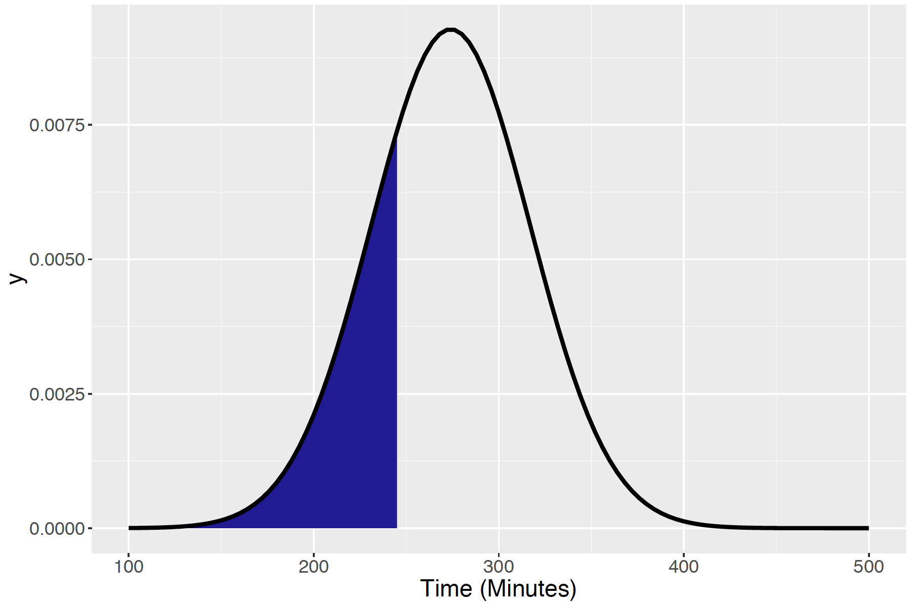
<p class="caption">
Figure 5.23: Normal density with mean 274 and standard deviation 43, with illustration of the 25th percentile.
</p>
</div>


<p><strong>Calculating Normal Percentiles</strong></p>
<p>Percentiles of a Normal curve are conveniently computed in R by use of the <code>qnorm()</code> function. Specifically, <code>qnorm(p, m, s)</code> gives the percentile of a Normal(<span class="math inline">\(m, s\)</span>) curve corresponding to a “left area” of <code>p</code>. In our example, the value of <code>p</code> is 0.25, and so the 25th percentile of the running times (with mean 274 minutes and standard deviation 43 minutes) is computed to be</p>
<div class="sourceCode" id="cb19"><pre class="sourceCode r"><code class="sourceCode r"><span id="cb19-1"><a href="continuous-distributions.html#cb19-1"></a><span class="kw">qnorm</span>(<span class="fl">0.25</span>, <span class="dv">274</span>, <span class="dv">43</span>)</span></code></pre></div>
<pre><code>## [1] 244.9969</code></pre>
<p>This means one needs to run faster (lower) than 245.0 minutes to get a t-shirt in this competition.</p>
Suppose one needs to complete the race faster than 10% of the runners to be invited to run in the race the following year. How fast does one need to run? If one wishes to have a 10% of the times to be larger than one’s time, this means that 90% of the times will be smaller than one’s time. That is, one wishes to find the 90th percentile, <span class="math inline">\(x_{90}\)</span> of the Normal distribution, shown in Figure 5.24.

<div class="figure"><span id="fig:unnamed-chunk-34"></span>
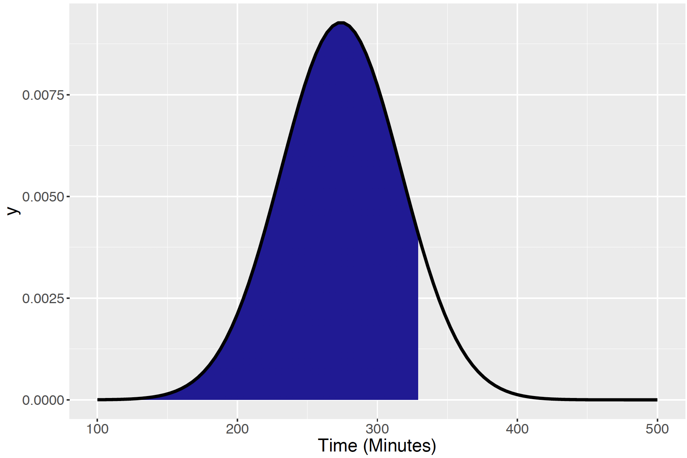
<p class="caption">
Figure 5.24: Normal density with mean 274 and standard deviation 43, with illustration of the 90th percentile.
</p>
</div>
<div class="sourceCode" id="cb21"><pre class="sourceCode r"><code class="sourceCode r"><span id="cb21-1"><a href="continuous-distributions.html#cb21-1"></a><span class="kw">qnorm</span>(<span class="fl">0.90</span>, <span class="dv">274</span>, <span class="dv">43</span>)</span></code></pre></div>
<pre><code>## [1] 329.1067</code></pre>
<p>So 329 minutes is the time to beat if one wishes to be invited to participate in next year’s race.</p>
</div>
<div id="binomial-probabilities-and-the-normal-curve" class="section level2">
<h2><span class="header-section-number">5.8</span> Binomial Probabilities and the Normal Curve</h2>
<p>The Normal curve is useful for modeling batches of data, especially when one is collecting measurements of some process. But the Normal curve actually has a more important justification. We will explore several important results about the pattern of Binomial probabilities and sample means and we will find these results useful in our introduction to statistical inference.</p>
<p>First, consider different shapes of Binomial distributions. Suppose that half of one’s student body is female and one plans on taking a sample survey of <span class="math inline">\(n\)</span> students to learn if they are interested in using a new recreational sports complex that is proposed. Let <span class="math inline">\(X\)</span> denote the number of females in the sample. Assuming a random sample is chosen, it is known that <span class="math inline">\(X\)</span> will be distributed Binomial with parameters <span class="math inline">\(n\)</span> and <span class="math inline">\(p=1/2\)</span>. What is the shape of the Binomial probabilities? Figure 5.25 displays the Binomial probabilities for sample sizes <span class="math inline">\(n\)</span> = 10, 20, 50, and 100.</p>
<div class="figure"><span id="fig:unnamed-chunk-36"></span>
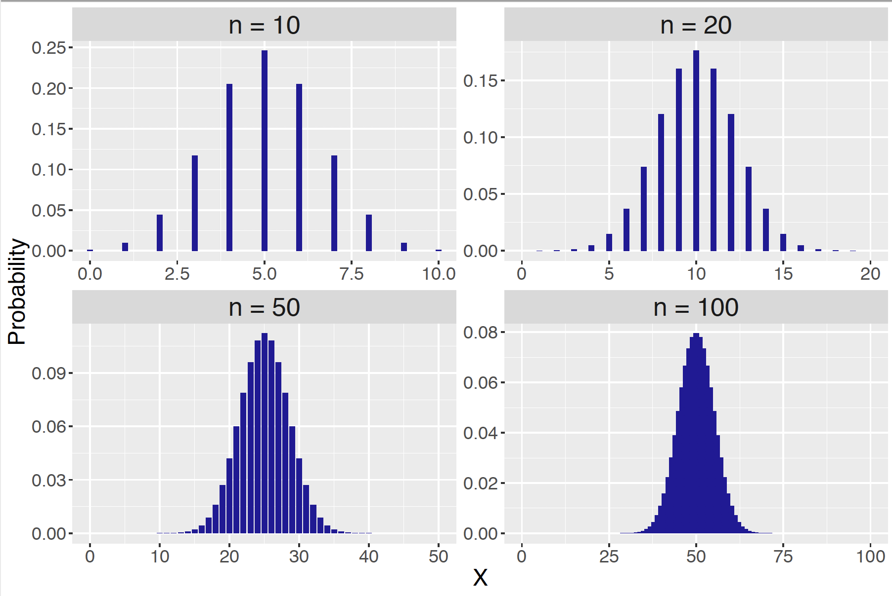
<p class="caption">
Figure 5.25: Binomial probabilities for sample sizes <span class="math inline">\(n\)</span> = 10, 20, 50, and 100, and success probability <span class="math inline">\(p = 0.5\)</span>.
</p>
</div>
<div class="figure"><span id="fig:unnamed-chunk-37"></span>

<p class="caption">
Figure 5.26: Binomial probabilities for sample sizes <span class="math inline">\(n\)</span> = 10, 20, 50, and 100, and success probability <span class="math inline">\(p = 0.1\)</span>.
</p>
</div>

<p>What does one notice about these probability graphs? First, note that each distribution is symmetric about the mean <span class="math inline">\(\mu = n p\)</span>. But, more interesting, the shape of the distribution seems to resemble a Normal curve as the number of trials <span class="math inline">\(n\)</span> increases.</p>
<p>Perhaps this pattern happens since one started with a Binomial distribution with <span class="math inline">\(p\)</span> = 0.5 and one would not see this behavior if a different value of <span class="math inline">\(p\)</span> was used. Suppose that only 10% of all students would use the new facility and let <span class="math inline">\(X\)</span> denote the number of students in your sample who say they would use the facility. The random variable <span class="math inline">\(X\)</span> would be distributed Binomial with parameters <span class="math inline">\(n\)</span> and <span class="math inline">\(p\)</span> = 0.1. Figure 5.26 shows the probability distributions again for the sample sizes <span class="math inline">\(n\)</span> = 10, 20, 50, and 100. As one might expect the shape of the probabilities for <span class="math inline">\(n\)</span>=10 are not very Normal-shaped – the distribution is skewed right. But, note that as <span class="math inline">\(n\)</span> increases, the probabilities become more Normal-shaped and the Normal curve seems to be a good match for <span class="math inline">\(n=100\)</span>.</p>
<p>Figures 5.25 and 5.26 illustrate a basic result: if one has a Binomial random variable <span class="math inline">\(X\)</span> with <span class="math inline">\(n\)</span> trials and probability of success <span class="math inline">\(p\)</span>, then, as the number of trials <span class="math inline">\(n\)</span> approaches infinity, the distribution of the standardized score
<span class="math display" id="eq:binomialnormal">\[\begin{equation}
Z = \frac{X - n p}{\sqrt{n p (1 - p)}}
\tag{5.7}
\end{equation}\]</span>
approaches a standard Normal random variable, that is a Normal distribution with mean 0 and standard deviation 1. This is a very useful result. It means, that for a large number of trials, one can approximate a Binomial random variable <span class="math inline">\(X\)</span> by a Normal random variable with mean and standard deviation
<span class="math display" id="eq:binomialmom">\[\begin{equation}
 \mu = n p, \, \, \, \sigma = \sqrt{n p (1 - p)}.
 \tag{5.8}
\end{equation}\]</span></p>
<p>This approximation result can be illustrated with our student survey example. Suppose that 10% of the student body would use the new recreational sports complex. One takes a random sample of 100 students — what’s the probability that 5 or fewer students in the sample would use the new facility?</p>
<p>The random variable <span class="math inline">\(X\)</span> in this problem is the number of students in the sample that would use the facility. This random variable has a Binomial distribution with <span class="math inline">\(n = 100\)</span> and <span class="math inline">\(p = 0.1\)</span> that is pictured as a histogram in Figure 5.27. By the approximation result, this distribution is approximated by a Normal curve with <span class="math inline">\(\mu = 100 (0.1) = 10\)</span> and <span class="math inline">\(\sigma = \sqrt{100 (0.1) (0.9)} = 3\)</span>
This Normal curve is placed on top of the probability histogram in Figure  – note that it is a pretty good fit to the histogram.</p>

<div class="figure"><span id="fig:unnamed-chunk-38"></span>
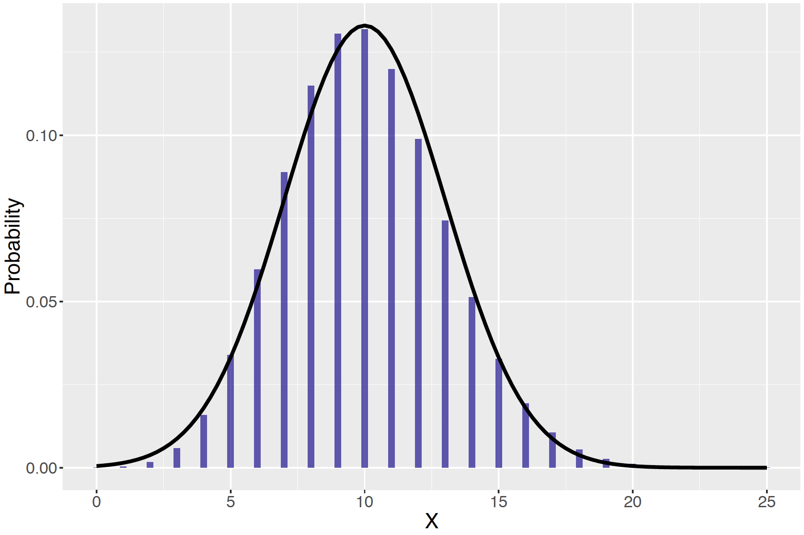
<p class="caption">
Figure 5.27: Histogram of Binomial probabilities, with the approximated Normal curve on top.
</p>
</div>
<p></p>
<p><strong>Binomial Computations Using a Normal Curve</strong></p>
<p>One is interested in the probability that at most 5 students use the facility, that is, <span class="math inline">\(P(X \le 5)\)</span>. This probability is approximated by the area under a Normal(10, 3) curve between <span class="math inline">\(X=0\)</span> and <span class="math inline">\(X=5\)</span>. Using the R <code>pnorm()</code> function, we compute this Normal curve area to be</p>
<div class="sourceCode" id="cb23"><pre class="sourceCode r"><code class="sourceCode r"><span id="cb23-1"><a href="continuous-distributions.html#cb23-1"></a><span class="kw">pnorm</span>(<span class="dv">5</span>, <span class="dv">10</span>, <span class="dv">3</span>) <span class="op">-</span><span class="st"> </span><span class="kw">pnorm</span>(<span class="dv">0</span>, <span class="dv">10</span>, <span class="dv">3</span>)</span></code></pre></div>
<pre><code>## [1] 0.04736129</code></pre>
<p>In this case, one can also find this probability exactly by a calculator or computer program that computes Binomial probabilities. Using the <code>pbinom()</code> function, we find the probability that <span class="math inline">\(X\)</span> is at most 5 is</p>
<div class="sourceCode" id="cb25"><pre class="sourceCode r"><code class="sourceCode r"><span id="cb25-1"><a href="continuous-distributions.html#cb25-1"></a><span class="kw">pbinom</span>(<span class="dv">5</span>, <span class="dt">size =</span> <span class="dv">100</span>, <span class="dt">prob =</span> <span class="fl">0.10</span>)</span></code></pre></div>
<pre><code>## [1] 0.05757689</code></pre>
<p>Here one sees that the Normal approximation gives a similar answer to the exact Binomial computation.</p>
</div>
<div id="sampling-distribution-of-the-mean" class="section level2">
<h2><span class="header-section-number">5.9</span> Sampling Distribution of the Mean</h2>
<p></p>
<p>We have seen that Binomial probabilities are well-approximated by a Normal curve when the number of trials is large. There is a more general result about the shape of sample means that are taken from any population.</p>
<p>To begin our discussion about the sampling behavior of means, suppose one has a jar filled with a variety of candies of different weights. One is interested in learning about the mean weight of a candy in the jar. One could obtain the mean weight by measuring the weight for every single candy in the jar, and then finding the mean of these measurements. But that could be a lot of work.
Instead of weighing all of the candies, suppose one selects a random sample of 10 candies from the jar and finds the mean of the weights of these 10 candies. What has one learned about the mean weight of all candies from this sample information?</p>
<p>To answer this type of question, one</p>
<ul>
<li>assumes that one know about the weights of all candies in the jar;</li>
<li>looks at the pattern of means that one obtains when one takes random samples from the jar.</li>
</ul>
<p>The group of items (here, candies) of interest is called the population. Assume first that one knows the population – that is, we know exactly the weights of all candies in the jar. There are five types of candies – Table 5.2 gives the weight of each type of candy (in grams) and the proportion of candies of that type.</p>
<p>Table 5.2 Population of candies in a jar.</p>
<table>
<thead>
<tr class="header">
<th align="left"></th>
<th align="center">Weight</th>
<th align="center">Proportion</th>
</tr>
</thead>
<tbody>
<tr class="odd">
<td align="left">fruity square</td>
<td align="center">2</td>
<td align="center">0.15</td>
</tr>
<tr class="even">
<td align="left">milk maid</td>
<td align="center">5</td>
<td align="center">0.35</td>
</tr>
<tr class="odd">
<td align="left">jelly nougat</td>
<td align="center">8</td>
<td align="center">0.20</td>
</tr>
<tr class="even">
<td align="left">caramel</td>
<td align="center">14</td>
<td align="center">0.15</td>
</tr>
<tr class="odd">
<td align="left">candy bars</td>
<td align="center">18</td>
<td align="center">0.15</td>
</tr>
</tbody>
</table>
<p>Let <span class="math inline">\(X\)</span> denote the weight of a randomly selected candy from the jar. Note that <span class="math inline">\(X\)</span> is a discrete random variable with the probability distribution given in Table . This distribution is summarized by computing a mean <span class="math inline">\(\mu\)</span> and a standard deviation <span class="math inline">\(\sigma\)</span>. The reader will be verify in the end-of-chapter exercises that
<span class="math inline">\(\mu\)</span> = 8.4500 and <span class="math inline">\(\sigma\)</span> = 5.3617.
So if one was really able to weigh each candy in the jar, one would find the mean weight to be <span class="math inline">\(\mu\)</span> = 8.4500 grams.</p>
<p>Suppose a random sample of 10 candies is selected with replacement from the jar and the mean is computed. Note that this is called the sample mean <span class="math inline">\(\bar X\)</span> to distinguish it from the population mean <span class="math inline">\(\mu\)</span>.</p>

<p><strong>Sampling Candies</strong></p>
<p>This sampling can be simulated using the following R code. The distribution of candies is stored in the vectors <code>weights</code> and <code>proportion</code>. By use of the <code>sample()</code> function, one obtains the following candy weights:</p>
<div class="sourceCode" id="cb27"><pre class="sourceCode r"><code class="sourceCode r"><span id="cb27-1"><a href="continuous-distributions.html#cb27-1"></a>weights &lt;-<span class="st"> </span><span class="kw">c</span>(<span class="dv">2</span>, <span class="dv">5</span>, <span class="dv">8</span>, <span class="dv">14</span>, <span class="dv">18</span>)</span>
<span id="cb27-2"><a href="continuous-distributions.html#cb27-2"></a>proportion &lt;-<span class="st"> </span><span class="kw">c</span>(.<span class="dv">15</span>, <span class="fl">.35</span>, <span class="fl">.2</span>, <span class="fl">.15</span>, <span class="fl">.15</span>)</span>
<span id="cb27-3"><a href="continuous-distributions.html#cb27-3"></a><span class="kw">sample</span>(weights, <span class="dt">size =</span> <span class="dv">10</span>, <span class="dt">prob =</span> proportion, <span class="dt">replace =</span> <span class="ot">TRUE</span>)</span></code></pre></div>
<pre><code>##  [1]  5  2 14  2  5  5  5 18  2  5</code></pre>
<p>One computes the sample mean<br />
<span class="math display">\[
\bar X = (5+8+5+14+5+18+8+18+5+8)/10 = 9.4 \, {\rm gm}.
\]</span></p>
<p>Suppose this process is repeated two more times – in the second sample, one obtains <span class="math inline">\(\bar X\)</span>= 6.9 gm and in the third sample, one obtains <span class="math inline">\(\bar X\)</span>= 8.8 gm. The three sample mean values are plotted in Figure 5.28.</p>
<div class="figure"><span id="fig:unnamed-chunk-42"></span>
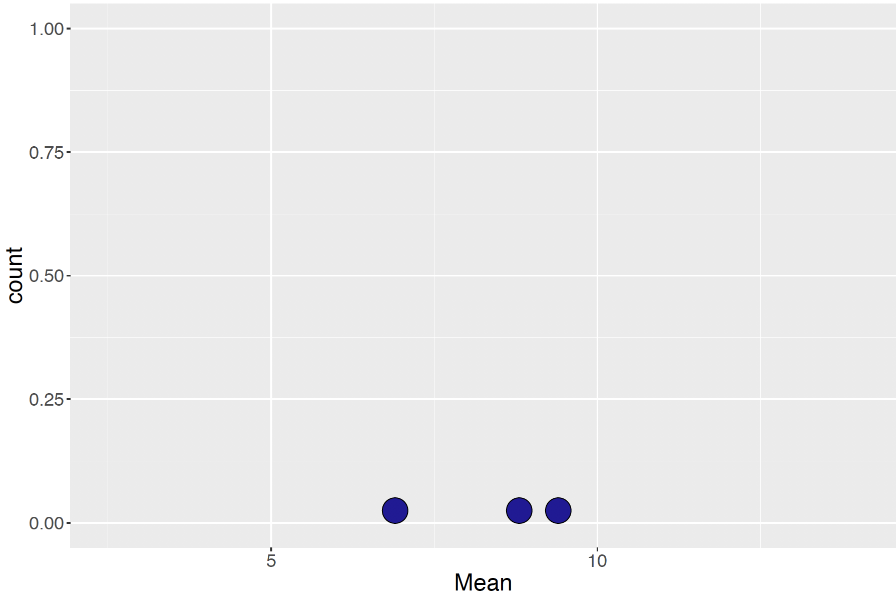
<p class="caption">
Figure 5.28: Graph of 3 sample means from 10 randomly selected candies.
</p>
</div>

<p>Suppose that one continues to take random samples of 10 candies from the jar and plot the values of the sample means on a graph – one obtains the sampling distribution of the mean <span class="math inline">\(\bar X\)</span>, shown in Figure 5.29.</p>
<div class="figure"><span id="fig:unnamed-chunk-43"></span>
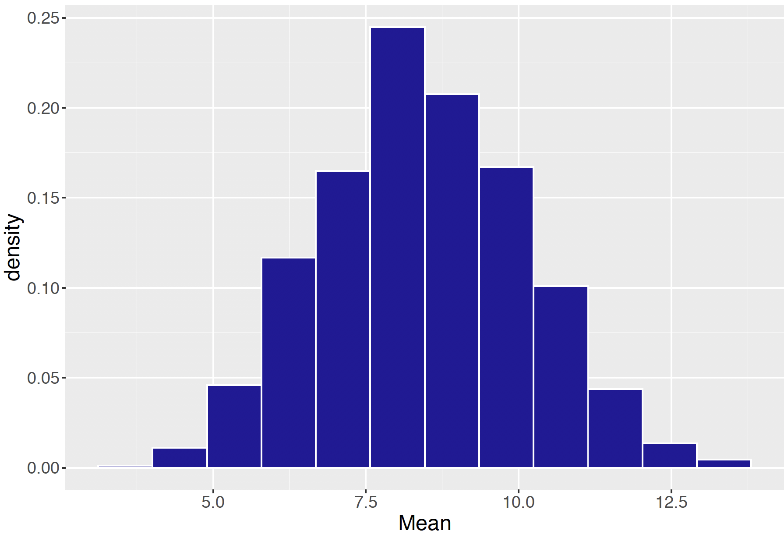
<p class="caption">
Figure 5.29: Histogram of the sampling distribution of the mean <span class="math inline">\(ar X\)</span>.
</p>
</div>

<p>Note that there is an interesting pattern of these sample means – they appear to have a Normal shape.
This motivates an amazing result, called the Central Limit Theorem, about the pattern of sample means. If one takes sample means from any population with mean <span class="math inline">\(\mu\)</span> and standard deviation <span class="math inline">\(\sigma\)</span>, then the sampling distribution of the means (for large enough sample size) will be approximately Normally distributed with mean and standard deviation
<span class="math display" id="eq:xbarmom">\[\begin{equation}
E(\bar X) = \mu, \, \, \, SD(\bar X) = \frac{\sigma}{\sqrt{n}}.
\tag{5.9}
\end{equation}\]</span></p>
<p>Let’s illustrate this result for our candy example. Recall that the population of candy weights had a mean and standard deviation given by <span class="math inline">\(\mu\)</span> = 8.45 and <span class="math inline">\(\sigma\)</span> = 5.36, respectively. If one takes samples of size <span class="math inline">\(n = 10\)</span>, then, by this result, the sample mean <span class="math inline">\(\bar X\)</span> will be approximately Normally distributed where
<span class="math display">\[
E(\bar X) = 8.45, \, \, \, SD(\bar X) = \frac{5.36}{\sqrt{10}} = 1.69.
\]</span></p>
<p>This Normal curve is drawn on top of the histogram of sample means, shown in Figure 5.30.</p>
<div class="figure"><span id="fig:unnamed-chunk-44"></span>
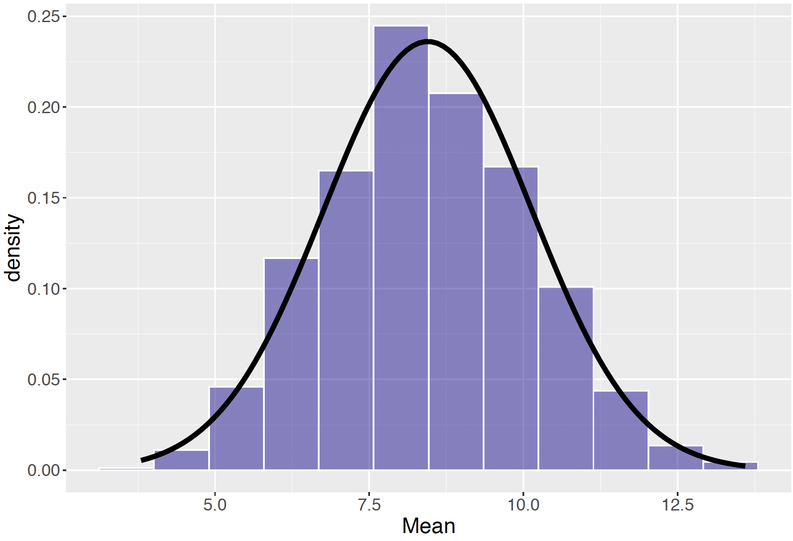
<p class="caption">
Figure 5.30: Histogram of the sampling distribution of the mean <span class="math inline">\(ar X\)</span>, with approximated Normal curve on top.
</p>
</div>

<p>There are two important points to mention about this result.</p>
<ol style="list-style-type: decimal">
<li>First the expected value of the sample means, <span class="math inline">\(E(\bar X)\)</span> , is equal to the population mean <span class="math inline">\(\mu\)</span>. When one takes a random sample, it is possible that the sample mean <span class="math inline">\(\bar X\)</span> is far away from the population mean <span class="math inline">\(\mu\)</span>. But, if one takes many random samples, then, on the average, the sample mean will be close to the population mean.</li>
<li>Second, note that the spread of the sample means, as measured by the standard deviation, is equal to <span class="math inline">\(\sigma / \sqrt{n}\)</span>. Since the spread of the population is <span class="math inline">\(\sigma\)</span>, note that the spread of the sample means will be smaller than the spread of the population. Moreover, if one takes random samples of a larger size, then the spread of the sample means will decrease.</li>
</ol>
<p>The second point can be illustrated in the context of our candy example. Above, one selected random samples of size <span class="math inline">\(n\)</span> = 10 and computed the sample means. Suppose instead one selected repeated samples of size <span class="math inline">\(n = 25\)</span> from the candy jar – how does the sampling distribution of means change?</p>
<p>Using R, one can simulate the process of taking samples of size 25 – histograms of the sample means are shown in Figure 5.31. By the Central Limit Theorem, the sample means will be approximately Normal-shaped with mean and standard deviation
<span class="math display">\[
E(\bar X) = 8.45, \, \, \, SD(\bar X) = \frac{5.36}{\sqrt{25}} = 1.07.
\]</span></p>
<div class="figure"><span id="fig:unnamed-chunk-45"></span>
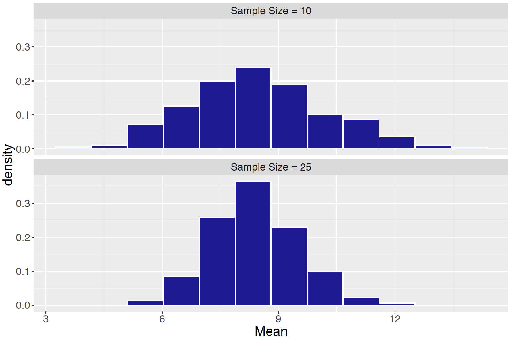
<p class="caption">
Figure 5.31: Histogram of the sampling distribution of the mean <span class="math inline">\(ar X\)</span>, with sample sizes <span class="math inline">\(n = 10\)</span> and <span class="math inline">\(n = 25\)</span>.
</p>
</div>

<p>Comparing the <span class="math inline">\(n\)</span> = 10 sample means with the <span class="math inline">\(n\)</span> = 25 sample means Figure 5.31, what’s the difference? Both sets of sample means are Normally distributed with an average equal to the population mean. But the <span class="math inline">\(n\)</span> = 25 sample means have a smaller spread – this means that as you take bigger samples, the sample mean <span class="math inline">\(\bar X\)</span> is more likely to be close to the population mean <span class="math inline">\(\mu\)</span>. The simulation is left as an end-of-chapter exercise.</p>
<p><strong>The Central Limit Theorem works for any population</strong></p>
<p>We illustrate the Central Limit Theorem for a second example where the population has a distinctive non-Normal shape. At one university, many of the students’ hometowns are within 40 miles of the school. There also are a large number of students whose homes are between 80-120 miles of the university. Given the population of “distances of home” of all students, it is interesting to see what happens when we take random samples from this population.</p>
<p>If we let <span class="math inline">\(X\)</span> denote “distance from home”, imagine that the population of distances is described by the continuous density curve in Figure 5.32. Two humps can be seen in this density – these correspond to the large number of students whose homes are in the ranges 0 to 40 miles and 70 to 130 miles. Suppose the mean and standard deviation of this population are given by <span class="math inline">\(\mu = 60\)</span> miles and <span class="math inline">\(\sigma = 41.6\)</span> miles, respectively.</p>
<div class="figure"><span id="fig:unnamed-chunk-46"></span>
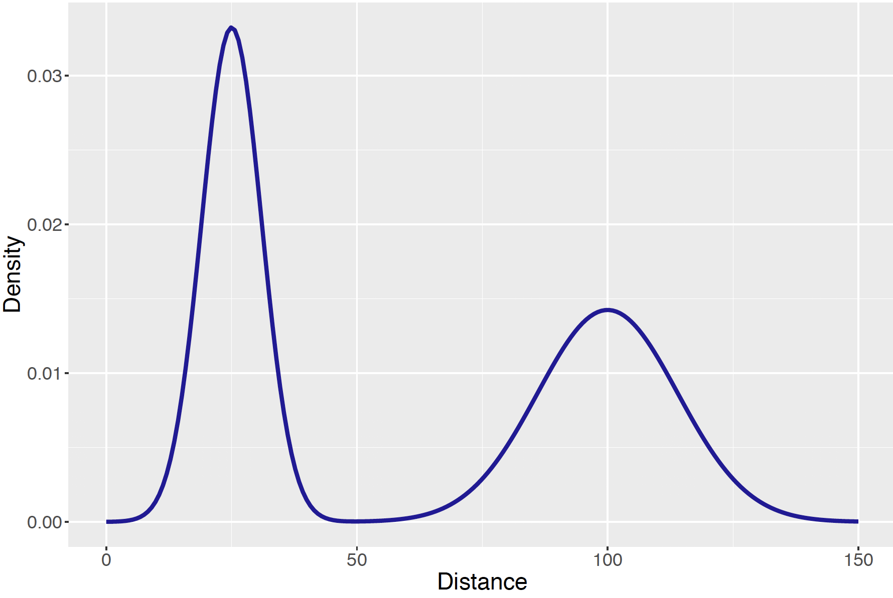
<p class="caption">
Figure 5.32: Density curve of the population of distances.
</p>
</div>

<p>Now imagine that one takes a random sample of <span class="math inline">\(n\)</span> students from this population and computes the sample mean from this sample. For example, suppose one takes a random sample of 20 students and collect the distances from home from these students – once one has collected the 20 distances, one computes the sample mean <span class="math inline">\(\bar X\)</span>. Here are two samples and the values of <span class="math inline">\(\bar X\)</span> :</p>
<p>Sample 1:
102 22 23 24 114 102 114 102 22 19
88 31 30 100 111 105 105 17 100 21<br />
xbar = 67.6 mi.</p>
<p>Sample 2:
12 127 33 34 73 19 111 99 16 20
22 16 24 62 22 76 91 115 117 93<br />
xbar = 59.1 mi.</p>
<p>If this sampling process is repeated many times, what will the distribution of sample means look like? Also, what is the effect of the sample size <span class="math inline">\(n\)</span>?
To answer this question, one can let the computer simulate repeated samples of sizes <span class="math inline">\(n = 1, n = 2, n = 5\)</span>, and <span class="math inline">\(n = 20\)</span>. The histograms in Figure 5.33 show the distributions of sample means for the four sample sizes.</p>
<div class="figure"><span id="fig:unnamed-chunk-47"></span>
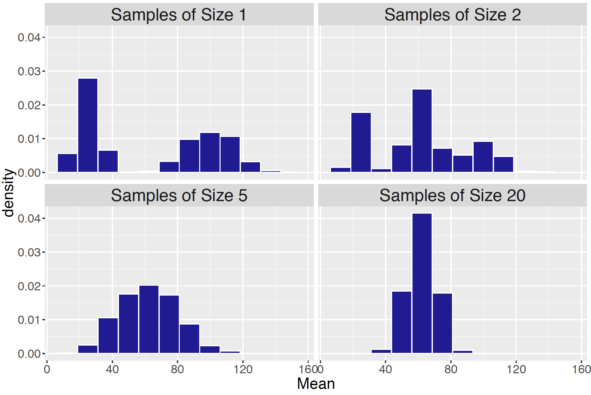
<p class="caption">
Figure 5.33: Histograms of random samples of distances, with sample sizes of <span class="math inline">\(n = 1, n = 2, n = 5\)</span>, and <span class="math inline">\(n = 20\)</span>.
</p>
</div>

<p>As one might expect, if samples of size 1 are selected, our sample means look just like the original population. If samples of size 2 ares selected, then the sample means have a funny three-hump distribution. But, note as one takes samples of larger sizes, the sampling distribution of means looks more like a Normal curve. This is what one expects from the Central Limit Theorem result – no matter what the population shape, the distribution of the sample means will be approximately Normal if the sample size is large enough.</p>
<p>What is the distribution of the sample means when we take samples of size <span class="math inline">\(n\)</span> = 20? One just applies the Central Limit Theorem result. The sample means will be approximately Normal with mean and standard deviation
<span class="math display" id="eq:xbarmom2">\[\begin{equation}
E(\bar X) = \mu, \, \, \, SD(\bar X) = \frac{\sigma}{\sqrt{n}}.
\tag{5.10}
\end{equation}\]</span>
Since one knows the mean and standard deviation of the population and the sample size, one just substitute these quantities and obtains
<span class="math display">\[
E(\bar X) = 60, \, \, \, SD(\bar X) = \frac{41.6}{\sqrt{20}} = 9.3.
\]</span>
These results can be used to answer some questions.</p>
<ol style="list-style-type: decimal">
<li><strong>What is the probability that a student’s distance from home is between 40 and 60 miles?</strong></li>
</ol>
<p>Actually this is a difficult question to answer exactly, since one does not know the exact shape of the population. But, looking at the graph of the population, one sees that the curve takes on very small values between 40 and 60 miles. So this probability is close to zero – very few students live between 40 and 60 miles from our school.</p>
<ol start="2" style="list-style-type: decimal">
<li><strong>What is the probability that, if one takes a sample of 20 students, the mean distance from home for these twenty students is between 40 and 60 miles?</strong></li>
</ol>
<p>This is a different question than the first one. This question is asking about the chance that the sample mean falls between 40 and 60 miles. Since the sampling distribution of <span class="math inline">\(\bar X\)</span> is approximately Normal with mean 60 and standard deviation 9.3, one can compute this by using R. Using the  function, one obtains</p>
<div class="sourceCode" id="cb29"><pre class="sourceCode r"><code class="sourceCode r"><span id="cb29-1"><a href="continuous-distributions.html#cb29-1"></a><span class="kw">pnorm</span>(<span class="dv">60</span>, <span class="dv">60</span>, <span class="fl">9.3</span>) <span class="op">-</span><span class="st"> </span><span class="kw">pnorm</span>(<span class="dv">40</span>, <span class="dv">60</span>, <span class="fl">9.3</span>)</span></code></pre></div>
<pre><code>## [1] 0.4842436</code></pre>
<p>It is interesting to note that although it is unlikely for students to live between 40 and 60 miles from the school, it is pretty likely for the sample mean for a group of 20 students to fall between 40 and 60 miles.</p>
<ol start="3" style="list-style-type: decimal">
<li><strong>What is the probability that the mean distance exceeds 100 miles?</strong></li>
</ol>
<p>Here one wants to find the probability that <span class="math inline">\(\bar X\)</span> is greater than 100, that is <span class="math inline">\(P(\bar X &gt; 100)\)</span>. Using R, one computes</p>
<div class="sourceCode" id="cb31"><pre class="sourceCode r"><code class="sourceCode r"><span id="cb31-1"><a href="continuous-distributions.html#cb31-1"></a><span class="dv">1</span> <span class="op">-</span><span class="st"> </span><span class="kw">pnorm</span>(<span class="dv">100</span>, <span class="dv">60</span>, <span class="fl">9.3</span>) </span></code></pre></div>
<pre><code>## [1] 8.498565e-06</code></pre>
<p>This probability is essentially zero, which means that it is highly unlikely that a sample mean of 20 student distances will exceed 100 miles.</p>
</div>
<div id="exercises-4" class="section level2">
<h2><span class="header-section-number">5.10</span> Exercises</h2>
<ol style="list-style-type: decimal">
<li><strong>Waiting at a ATM Machine</strong></li>
</ol>
<p>You are waiting at your local ATM machine and as usual, you are waiting in a line. Suppose you know that your waiting time can be between 0 to 5 minutes and any value between 0 and 5 minutes is equally likely.</p>
<ol style="list-style-type: lower-alpha">
<li>The graph below shows the density function for <span class="math inline">\(X\)</span>, the waiting time. What is the height of this function?</li>
</ol>
<p>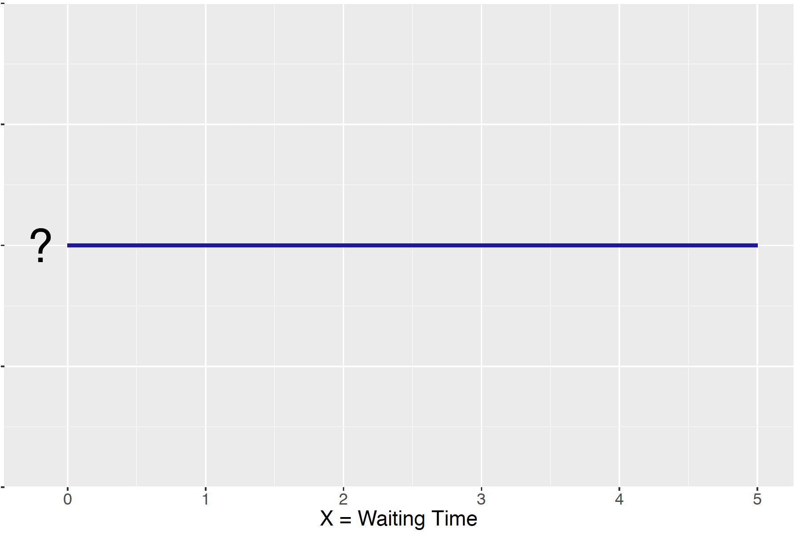</p>
<ol start="2" style="list-style-type: lower-alpha">
<li>Find the probability you wait more than 2 minutes.</li>
<li>Find the probability you wait between 2 and 3 minutes.</li>
</ol>
<ol start="2" style="list-style-type: decimal">
<li><strong>Morning Wake-Up</strong></li>
</ol>
<p>Suppose you wake up at a random time in the morning between 6 am and 12 pm.</p>
<ol style="list-style-type: lower-alpha">
<li>Find the probability you wake up before 11 am.</li>
<li>Find the probability you wake up between 8 and 10 am.</li>
<li>What is an “average” or typical time you will wake up? Explain how you computed this number.</li>
<li>Find the standard deviation of the time.</li>
</ol>
<ol start="3" style="list-style-type: decimal">
<li><strong>The Median Waiting Time</strong></li>
</ol>
<p>In the “waiting for a bus” example, suppose that you record the median time <span class="math inline">\(T\)</span> (in minutes) that you wait for the bus on the three days. The density function for this median time is given by
<span class="math display">\[
f(t) = \frac{6 t (10 - t)}{1000}, \, \, 0 &lt; t &lt; 10.
\]</span></p>
<ol style="list-style-type: lower-alpha">
<li>Draw a graph of this density function.</li>
<li>Find the probability that the median time is between 5 and 7 minutes.</li>
<li>Find the cdf <span class="math inline">\(F(t)\)</span> for all values of <span class="math inline">\(t\)</span>.</li>
<li>Using the cdf you found in part c, find the probability the median time is over 6 minutes.</li>
<li>Find the 75% percentile of your median waiting time.</li>
</ol>
<ol start="4" style="list-style-type: decimal">
<li><strong>The Sum of Two Spins</strong></li>
</ol>
<p>Suppose you spin two spinners, where the location of the arrow for each spinner is equally likely to fall between 0 and 10.</p>
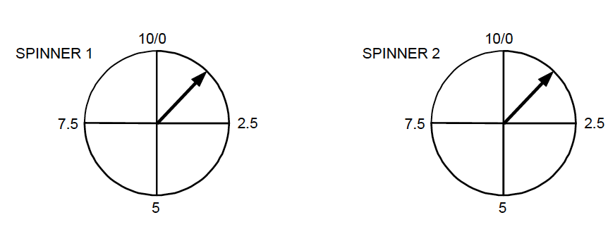

<p>If you let <span class="math inline">\(S\)</span> be the sum of the two spins, it can be shown that the density function of <span class="math inline">\(S\)</span> is given by
<span class="math display">\[
f(s) = 
 \begin{cases}
                                   s/100 , &amp; 0  &lt; s \le 10  \\
                                   (20-s) / 100, &amp; 10 &lt; s \le 20, \\
  \end{cases}
\]</span>
and shown by the figure below.</p>
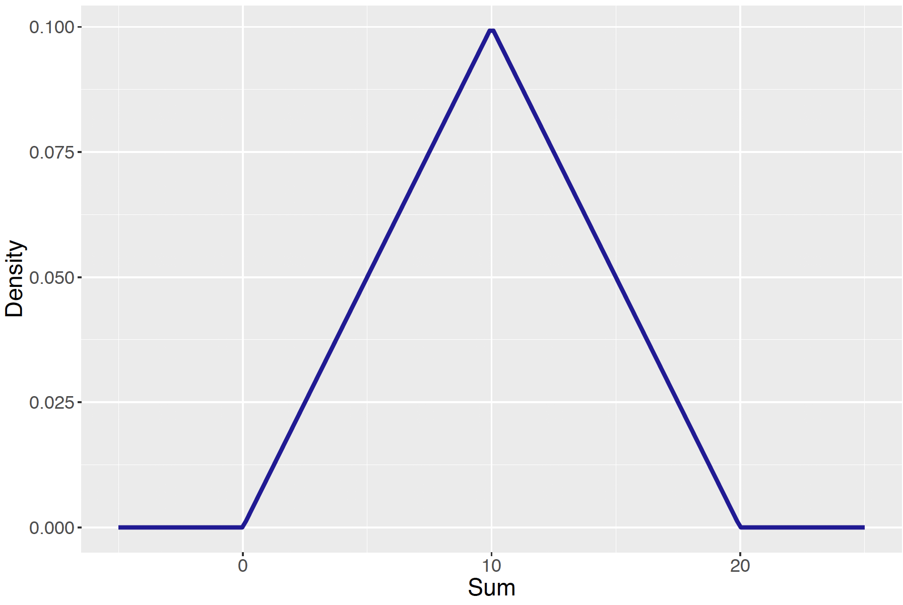

<ol style="list-style-type: lower-alpha">
<li>Check that this function satisfies the two properties of a probability density function.</li>
<li>Find the probability the sum of the two spins is smaller than 5.</li>
<li>Find the cdf function <span class="math inline">\(F\)</span>.</li>
<li>Using the cdf function, find the probability the sum of spins falls between 8 and 12.</li>
<li>Using the cdf function, find the probability the sum of spins exceeds 12.</li>
</ol>
<ol start="5" style="list-style-type: decimal">
<li><strong>Salaries for Professional Basketball Players</strong></li>
</ol>
<p>Let <span class="math inline">\(X\)</span> denote the salary (in millions of dollars) of a professional basketball player. A reasonable density function for <span class="math inline">\(X\)</span> is given by
<span class="math display">\[
 f(x) = \frac{0.15}{x^{1.3}}, \, \, x \ge 0.1
 \]</span>
shown by the figure below.</p>
<p>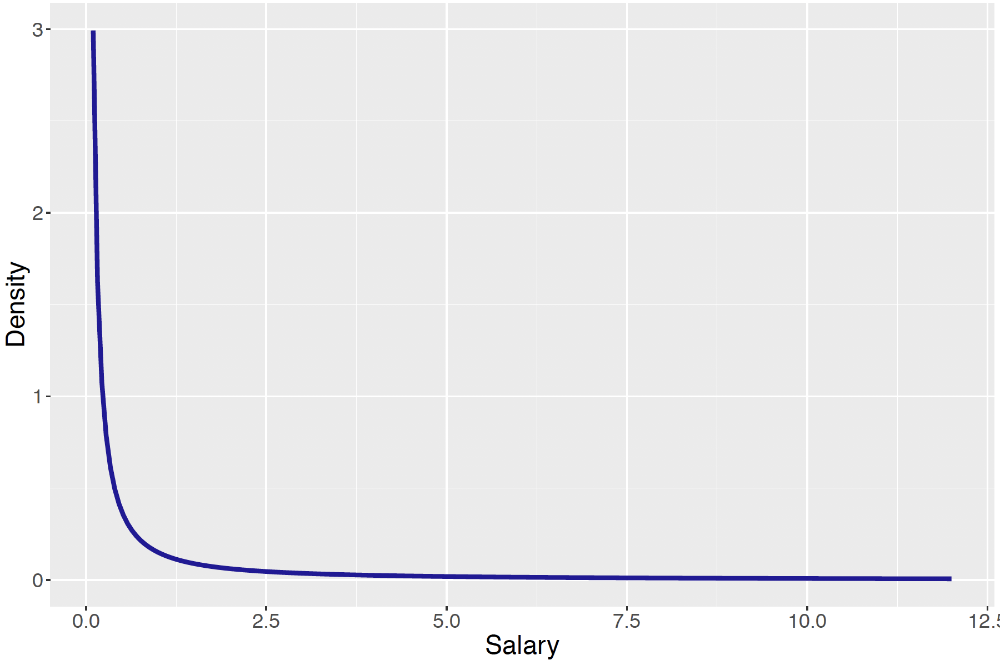</p>

<ol style="list-style-type: lower-alpha">
<li>What proportion of basketball players earn more than 1 million dollars?</li>
<li>What proportion of players earn between 1 and 2 million dollars?</li>
<li>Find the cdf function.</li>
<li>Using the cdf function, find the probability a player earns less than one-half a million dollars.</li>
<li>Find the “average” salary of a NBA player.</li>
</ol>
<ol start="6" style="list-style-type: decimal">
<li><strong>Grading on a Curve</strong></li>
</ol>
<p>Suppose the grades on a math test are distributed according to the curve.
<span class="math display">\[
 f(x) = \frac{x}{5000}, 0 &lt; x &lt; 100.
 \]</span></p>
<ol style="list-style-type: lower-alpha">
<li>Draw a graph of this density curve.</li>
<li>Find the mean grade on this test.</li>
<li>What proportion of students who take this test get a grade of 90 or higher?</li>
<li>What proportion of students get a <span class="math inline">\(C\)</span> grade, where <span class="math inline">\(C\)</span> is defined to be between 70 and 80?</li>
<li>Is this test harder or easier than the test grades in your statistics class? Explain.</li>
</ol>
<ol start="7" style="list-style-type: decimal">
<li><strong>Time to Clean Your Room</strong></li>
</ol>
Suppose the time that it takes you to clean your room (in hours) is a random variable <span class="math inline">\(X\)</span> with the cdf function given below. A graph of the cdf is also shown.
<span class="math display">\[
F(x) = 
 \begin{cases}
                                   0 , &amp; x &lt; 0  \\
                                   0.75 (2 x ^ 3 / 3 - x ^ 4 / 4) &amp; 0 \le x \le 2 \\
                                   1, &amp; x &gt; 2
  \end{cases}
\]</span>

<p>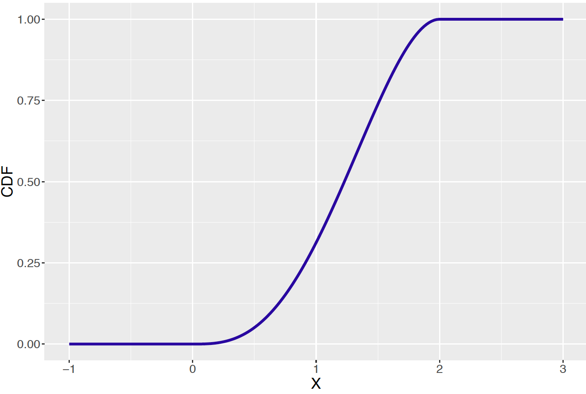</p>
<ol style="list-style-type: lower-alpha">
<li>Find the probability you can clean your room in under one hour.</li>
<li>Find the probability it takes you over one and a half hour to clean your room?</li>
<li>Using the graph, find a value <span class="math inline">\(M\)</span> such that it is equally likely that <span class="math inline">\(X\)</span> is smaller than <span class="math inline">\(M\)</span> and <span class="math inline">\(X\)</span> is larger than <span class="math inline">\(M\)</span>. [Hint: <span class="math inline">\(M\)</span> is the 50th percentile of <span class="math inline">\(X\)</span>.]</li>
</ol>
<ol start="8" style="list-style-type: decimal">
<li><strong>Time to Complete a Race</strong></li>
</ol>
<p>Suppose a group of children are running a race. The times (in minutes) that the children complete the race can be described by the density function
<span class="math display">\[
 f(x) = \frac{4 + (x - 3)^2}{21}, 3 &lt; x &lt; 6.
 \]</span></p>
<ol style="list-style-type: lower-alpha">
<li>Graph this density function.</li>
<li>Looking at your graph, is it more common to have a slow time (near 6 minutes) or a fast time (near 3 minutes)?</li>
<li>Find the probability a child completes the race in under 4 minutes.</li>
<li>Find the probability that a child’s time exceeds 5 1/2 minutes.</li>
<li>Find the median running time.</li>
</ol>
<ol start="9" style="list-style-type: decimal">
<li><strong>Spinning a Random Spinner</strong></li>
</ol>
<p>Suppose you flip a coin. If the coin lands heads, you spin a spinner that is equally likely to fall at any point in the interval (0, 4). If the coin lands tails, you spin a different spinner that lands at any point in the interval (2, 6). If <span class="math inline">\(X\)</span> denotes your spin, the density function for <span class="math inline">\(X\)</span> is graphed below.</p>

<p>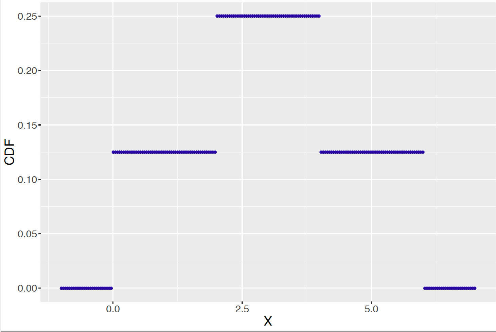</p>
<ol style="list-style-type: lower-alpha">
<li>Check that this graphed function is indeed a probability density.</li>
<li>Find the probability that <span class="math inline">\(X\)</span> is greater than 5.</li>
<li>Find the probability that <span class="math inline">\(X\)</span> falls between 1 and 3.</li>
</ol>
<ol start="10" style="list-style-type: decimal">
<li><strong>Lifetimes of Light Bulbs</strong></li>
</ol>
<p>Suppose that a company is interested in the amount of time that a particular type of light bulb will last until it burns out. After sampling the lifetimes for a large group of light bulbs, it is decided that the lifetime <span class="math inline">\(X\)</span> (in hours) is well-described by the exponential distribution of the form
<span class="math display">\[
f(x) = \frac{1}{100} e^{-x / 100}, x &gt; 0.
\]</span>
The cdf for <span class="math inline">\(X\)</span> is drawn below.</p>
<p>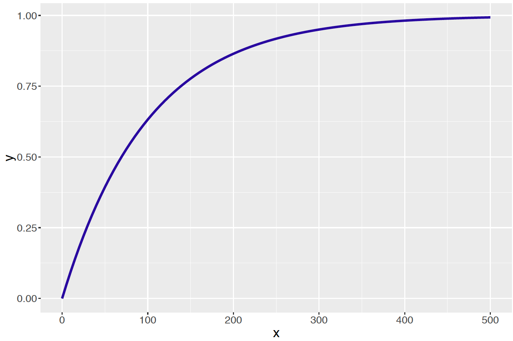</p>

<p>In addition, the cdf is computed for some values of <span class="math inline">\(X\)</span> in the following table.</p>
<table>
<thead>
<tr class="header">
<th align="center"><span class="math inline">\(x\)</span></th>
<th align="center"><span class="math inline">\(F(x)\)</span></th>
<th align="center"><span class="math inline">\(x\)</span></th>
<th align="center"><span class="math inline">\(F(x)\)</span></th>
</tr>
</thead>
<tbody>
<tr class="odd">
<td align="center">0</td>
<td align="center">0</td>
<td align="center">180</td>
<td align="center">0.8347</td>
</tr>
<tr class="even">
<td align="center">30</td>
<td align="center">0.2592</td>
<td align="center">210</td>
<td align="center">0.8775</td>
</tr>
<tr class="odd">
<td align="center">60</td>
<td align="center">0.4512</td>
<td align="center">240</td>
<td align="center">0.9093</td>
</tr>
<tr class="even">
<td align="center">90</td>
<td align="center">0.5934</td>
<td align="center">270</td>
<td align="center">0.9328</td>
</tr>
<tr class="odd">
<td align="center">120</td>
<td align="center">0.6988</td>
<td align="center">300</td>
<td align="center">0.9502</td>
</tr>
<tr class="even">
<td align="center">150</td>
<td align="center">0.7769</td>
<td align="center"></td>
<td align="center"></td>
</tr>
</tbody>
</table>
<ol style="list-style-type: lower-alpha">
<li>Find the probability that a lifetime of a bulb will be less than 90 hours.</li>
<li>Find the probability the lifetime is between 120 and 180 hours.</li>
<li>From the table, approximate the median lifetime.</li>
<li>Approximate the 95th percentile.</li>
</ol>
<ol start="11" style="list-style-type: decimal">
<li><strong>Locations of Dart Throws</strong></li>
</ol>
<p>Suppose you throw a dart at a circular target such that the dart is equally likely to land in any location on the target. The locations for a large number of dart throws are shown in the figure below.</p>
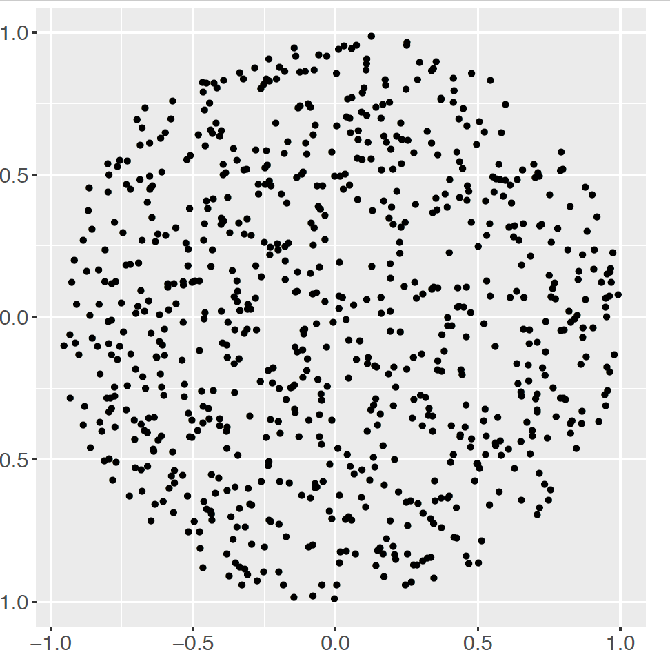

<p>Let <span class="math inline">\(X\)</span> denote the distance of a throw from the bulls eye. It can be shown that the density function of <span class="math inline">\(X\)</span> has the form<br />
<span class="math display">\[
f(x) = \frac{x}{2}, 0 &lt; x &lt; 2.
\]</span></p>
<ol style="list-style-type: lower-alpha">
<li>Find the probability your throw lands within a distance of 1 unit from the target.</li>
<li>Find the probability your throw lands between .5 and 1.5 units from the target.</li>
<li>If you threw the dart many times at the target, find your average distance from the target.</li>
</ol>
<ol start="12" style="list-style-type: decimal">
<li><strong>Heights of Men</strong></li>
</ol>
<p>Suppose heights of American men are approximately Normally distributed with mean 70 inches and standard deviation 4 inches.</p>
<ol style="list-style-type: lower-alpha">
<li>What proportion of men is between 68 and 74 inches?</li>
<li>What proportion of men is taller than 6 feet?</li>
<li>Find the 90th percentile of heights.</li>
</ol>
<ol start="13" style="list-style-type: decimal">
<li><strong>Test Scores</strong></li>
</ol>
<p>Test scores in a precalculus test are approximately Normally distributed with mean 75 and standard deviation 10. If you choose a student at random from this class</p>
<ol style="list-style-type: lower-alpha">
<li>What is the probability he or she gets an <span class="math inline">\(A\)</span> (over 90)?</li>
<li>What is the probability he or she gets a <span class="math inline">\(C\)</span> (between 70 and 80)?</li>
<li>What is the letter grade of the lower quartile of the scores?</li>
</ol>
<ol start="14" style="list-style-type: decimal">
<li><strong>Body Temperatures</strong></li>
</ol>
<p>The normal body temperature was measured for 130 subjects in an article published in the Journal of the American Medical Association. These body temperatures are approximately Normally distributed with mean <span class="math inline">\(\mu\)</span> = 98.2 degrees and standard deviation <span class="math inline">\(\sigma\)</span>= 0.73.</p>
<ol style="list-style-type: lower-alpha">
<li>Most people believe that the mean body temperature of healthy individuals is 98.6 degrees, but actually the mean body temperature is smaller than 98.6. What proportion of healthy individuals have body temperatures smaller than 98.6?</li>
<li>Suppose a person has a body temperature of 96 degrees. What is the probability of having a temperature less than or equal to 96 degrees? Based on this computation, would you say that a temperature of 96 degrees is unusual? Why?</li>
<li>Suppose that a doctor diagnoses a person as sick if his or her body temperature is above the 95th percentile of the temperature of “healthy” individuals. Find this body temperature that will give a sick diagnosis.</li>
</ol>
<ol start="15" style="list-style-type: decimal">
<li><strong>Baseball Batting Averages</strong></li>
</ol>
<p>Batting averages of baseball players can be well approximated by a Normal curve. The figure below displays the batting averages of players during the 2003 baseball season with at least 300 at-bats (opportunities to hit). The mean and standard deviation of the matching Normal curve shown in the figure are <span class="math inline">\(\mu\)</span> = 0.274 and <span class="math inline">\(\sigma\)</span> = 0.027, respectively.</p>

<p>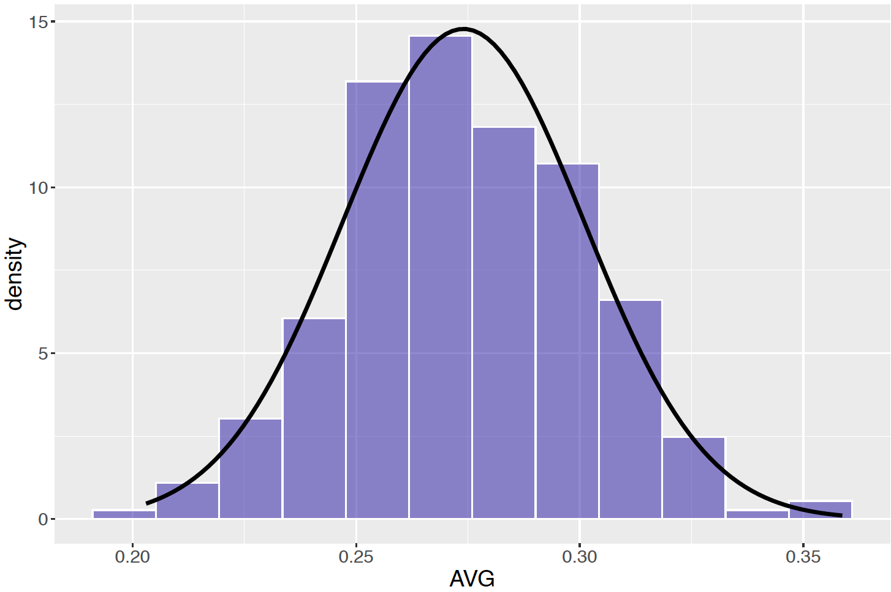</p>
<ol style="list-style-type: lower-alpha">
<li>If you choose a baseball player at random, find the probability his batting average is over 0.300. (This is a useful benchmark for a “good” batting average.)</li>
<li>Find the probability this player has a batting average between 0.200 and 0.250.</li>
<li>A baseball player is said to hit below the Mendoza line (named for weak-hitting baseball player Minnie Mendoza) if his batting average is under 0.200. Given our model, find the probability that a player hits below the Mendoza line.</li>
<li>Suppose that a player has an incentive clause in his contract that states that he will earn an additional $1 million if his batting average is in the top 15%. How well does the player have to hit to get this additional salary?</li>
</ol>
<ol start="16" style="list-style-type: decimal">
<li><strong>Emergency Calls</strong></li>
</ol>
<p>Suppose that the AAA reports that the average time it takes to respond to an emergency call on the highway is 25 minutes. Assume that the times to respond to emergency calls are approximately Normally distributed with mean 25 minutes and standard deviation 4 minutes.</p>
<ol style="list-style-type: lower-alpha">
<li>If your car gets stuck on a highway and you call the AAA for help, find the probability that it will take longer than 30 minutes to get help.</li>
<li>Find the probability that you’ll wait between 20 and 30 minutes for help.</li>
<li>Find a time such that you are 90% sure that the wait will be smaller than this number.</li>
</ol>
<ol start="17" style="list-style-type: decimal">
<li><strong>Buying a Battery for your iPod</strong></li>
</ol>
<p>Suppose you need to buy a new battery for your iPod. Brand <span class="math inline">\(A\)</span> lasts an average of 11 hours and Brand <span class="math inline">\(B\)</span> lasts an average of 12 hours. You plan on using your iPod for eight hours on a trip and you want to choose the battery that is most likely to last 8 hours (that is, have a life that is least as long as 8 hours).</p>
<ol style="list-style-type: lower-alpha">
<li>Based on this information, can you decide which battery to purchase? Why or why not?</li>
<li>Suppose that the battery lives for Brand <span class="math inline">\(A\)</span> are Normally distributed with mean 11 hours and standard deviation 1.5 hours, and the battery lives for Brand <span class="math inline">\(B\)</span> are Normally distributed with mean 12 hours and standard 2 hours. Compute the probability that each battery will last at least 8 hours.<br />
</li>
<li>On the basis of this calculation in part (b), which battery should you purchase?</li>
</ol>
<ol start="18" style="list-style-type: decimal">
<li><strong>Lengths of Pregnancies</strong></li>
</ol>
<p>It is known that the lengths of completed pregnancies are approximately Normally distributed with mean 266 days and standard deviation 16 days.</p>
<ol style="list-style-type: lower-alpha">
<li>What is the probability a pregnancy will last more than 270 days?</li>
<li>Find an interval that will contain the middle 50% of the pregnancy lengths.</li>
<li>Suppose a doctor wishes to tell a mother that he is 90% confident that the pregnancy will be shorter than <span class="math inline">\(x\)</span> days. Find the value of <span class="math inline">\(x\)</span>.</li>
</ol>
<ol start="19" style="list-style-type: decimal">
<li><strong>Attendances at Baseball Games</strong></li>
</ol>
<p>Attendance for home games of the Cleveland Indians for a recent baseball season can be approximated by a Normal curve with mean <span class="math inline">\(\mu\)</span> = 24,667 and standard deviation <span class="math inline">\(\sigma\)</span> = 6144.</p>
<p>Consider the attendance for one randomly selected game during the 2006 season.</p>
<ol style="list-style-type: lower-alpha">
<li>Find the probability the attendance exceeds 30,000.</li>
<li>Find the probability the attendance is between 20,000 and 30,000.</li>
<li>Suppose that the attendance at one game in the following season is 12,000. Based on the Normal curve, compute the probability that the attendance is at most 12,000. Based on this computation, is this attendance unusual? Why?</li>
</ol>
<ol start="20" style="list-style-type: decimal">
<li><strong>Coin Flipping</strong></li>
</ol>
<p>Suppose you flip a fair coin 1000 times.</p>
<ol style="list-style-type: lower-alpha">
<li>How many heads do you expect to get?</li>
<li>Find the probability that the number of heads is between 480 and 520.</li>
<li>Suppose your friend gets 550 heads. What is the probability of getting at least 550 heads? Do you believe that your friend’s coin really was fair? Explain.</li>
</ol>
<ol start="21" style="list-style-type: decimal">
<li><strong>Use of Online Banking Services</strong></li>
</ol>
<p>Suppose that a newspaper article claims that 80% of adults currently use online banking services. You wonder if the proportion of adults who use online banking services in your community, <span class="math inline">\(p\)</span>, is actually this large. You take a sample of 100 adults and 70 tell you they use online banking.</p>
<ol style="list-style-type: lower-alpha">
<li>If the newspaper article is accurate, find the probability that 70 or fewer of your sample would use on-line banking.</li>
<li>Based on your computation, is there sufficient evidence to suggest that less than 80% of your community use online banking services? Explain.</li>
</ol>
<ol start="22" style="list-style-type: decimal">
<li><strong>Time to Complete a Race</strong></li>
</ol>
Suppose a group of children are running a race. The times (in minutes) that the children complete the race can be described by the density function
<span class="math display">\[
 f(x) = \frac{4+ ( x-3)^2}{21}, 3 &lt; x &lt; 6.
 \]</span>
A graph of this density is shown below. The mean and standard deviation of this density are given by 4.83 and 0.84 minutes, respectively.

<p>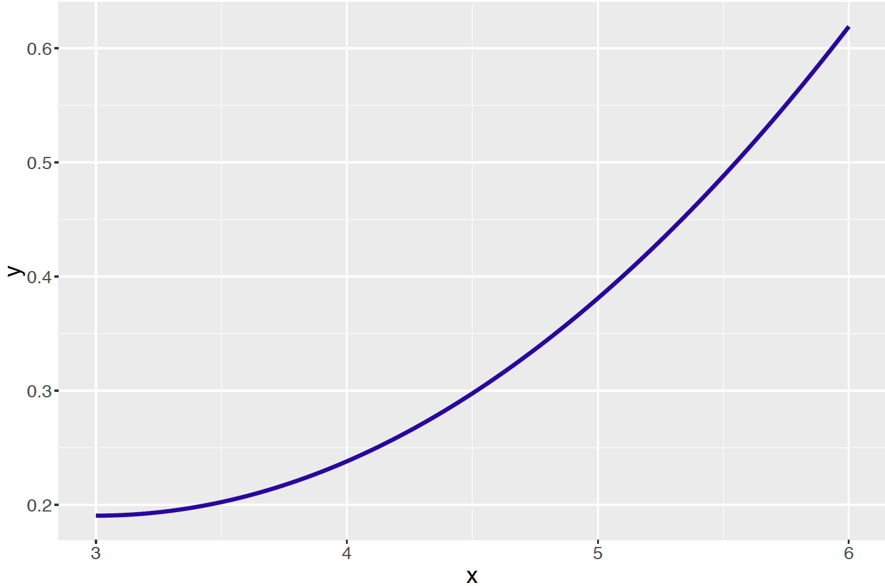</p>
<ol style="list-style-type: lower-alpha">
<li>Suppose 25 students run this race and you find the mean completion time. Find the probability that the mean time exceeds 5 minutes.</li>
<li>Find an interval that you are 90% confident contains the mean completion time for the 25 students.</li>
</ol>
<ol start="23" style="list-style-type: decimal">
<li><strong>Snowfall Accumulation</strong></li>
</ol>
<p>Your local meteorologist has collected data on snowfall for the past 100 years. Based on these data, you are told that the amount of snowfall in January is approximately Normally distributed with mean 15 inches and standard deviation 4 inches.</p>
<ol style="list-style-type: lower-alpha">
<li>Find the probability you get more than 20 inches of snow this year.</li>
<li>In the next ten years, find the probability that the average snowfall (for these ten years) will exceed 20 inches.</li>
</ol>
<ol start="24" style="list-style-type: decimal">
<li><strong>Total Waiting Time at a Bank</strong></li>
</ol>
<p>You are waiting to be served at your bank. From past experience, you know that your time to be served has a Uniform distribution between 0 and 10 minutes.</p>
<ol style="list-style-type: lower-alpha">
<li>Find the mean and standard deviation of your waiting time.</li>
<li>The Central Limit Theorem can be also stated in terms of the sum of random variables. If the random variables <span class="math inline">\(X_1, ..., X_n\)</span> represent a random sample drawn from a population with mean <span class="math inline">\(\mu\)</span> and standard deviation <span class="math inline">\(\sigma\)</span>, then the sum of random variables <span class="math inline">\(S = \sum_{i=1}^n X_i\)</span>, for large sample size <span class="math inline">\(n\)</span>, will be approximately Normally distributed with mean <span class="math inline">\(n \mu\)</span> and standard deviation <span class="math inline">\(\sqrt{n} \sigma\)</span> . Suppose you wait at the bank for 30 days. Use this version of the Central Limit Theorem to find the probability that your total waiting time will exceed three hours.</li>
</ol>
<ol start="25" style="list-style-type: decimal">
<li><strong>Total Errors in Check Recording</strong></li>
</ol>
<p>Suppose you record the amount of a written check to the nearest dollar. It is reasonable to assume that the error between the actual check amount and the written amount has a Uniform distribution between <span class="math inline">\(-0.50\)</span> and <span class="math inline">\(+0.50\)</span>.</p>
<ol style="list-style-type: lower-alpha">
<li>Find the mean and standard deviation of one error.</li>
<li>Suppose you write 100 checks in a single month and <span class="math inline">\(S\)</span> denotes the total error in recording these checks. Find the probability that <span class="math inline">\(S\)</span> is smaller than $5. (Use the version of the Central Limit Theorem described in Exercise 5.)</li>
<li>Find an interval of the form <span class="math inline">\((-c, c)\)</span> so that <span class="math inline">\(P(-c &lt; S &lt; c) = 0.95\)</span>.</li>
</ol>
<ol start="26" style="list-style-type: decimal">
<li><strong>Distribution of Measurements</strong></li>
</ol>
<p>Suppose that a group of measurements is approximately Normally distributed with mean <span class="math inline">\(\mu\)</span> and standard deviation <span class="math inline">\(\sigma\)</span>.</p>
<ol style="list-style-type: lower-alpha">
<li>Find the probability that a measurement falls within one standard deviation of the mean.</li>
<li>Is it likely that you collect a measurement that is larger than <span class="math inline">\(\mu +3 \sigma\)</span> ? Explain.</li>
<li>Find an interval that contains the middle 50% of the measurements.</li>
</ol>
<ol start="27" style="list-style-type: decimal">
<li><strong>Salaries of Professional Football Players</strong></li>
</ol>
<p>Suppose you learn that the mean salary of all professional football players this season is 7 million dollars with a standard deviation of 2 million dollars.</p>
<ol style="list-style-type: lower-alpha">
<li>Do you believe that the distribution of salaries is approximately Normally distributed? If your answer is no, sketch a plausible distribution for the salaries.</li>
<li>From your graph, find an approximate probability that a salary is smaller than $6 million.</li>
<li>Suppose you take a random sample of 30 salaries. Find the probability that the mean salary for this sample is smaller than $6 million.</li>
</ol>
<ol start="28" style="list-style-type: decimal">
<li><strong>Weights of Candies</strong>
</li>
</ol>
<p>In the candy bowl example, the probability distribution of the candy weight <span class="math inline">\(X\)</span> is given in the following table.</p>
<p>Table 5.1. Weight and proportion of 5 types of candies.</p>
<table>
<thead>
<tr class="header">
<th align="center"></th>
<th align="center"><span class="math inline">\(x\)</span></th>
<th align="center"><span class="math inline">\(P(X = x)\)</span></th>
</tr>
</thead>
<tbody>
<tr class="odd">
<td align="center">fruity square</td>
<td align="center">2</td>
<td align="center">0.15</td>
</tr>
<tr class="even">
<td align="center">milk maid</td>
<td align="center">5</td>
<td align="center">0.35</td>
</tr>
<tr class="odd">
<td align="center">jelly nougat</td>
<td align="center">8</td>
<td align="center">0.20</td>
</tr>
<tr class="even">
<td align="center">caramel</td>
<td align="center">14</td>
<td align="center">0.15</td>
</tr>
<tr class="odd">
<td align="center">candy bars</td>
<td align="center">18</td>
<td align="center">0.15</td>
</tr>
</tbody>
</table>
<p>Verify by calculation that the mean and standard deviation of <span class="math inline">\(X\)</span> are given by <span class="math inline">\(\mu\)</span> = 8.4500 and <span class="math inline">\(\sigma\)</span> = 5.3617, respectively.</p>
<ol start="29" style="list-style-type: decimal">
<li><strong>Sleeping Times</strong></li>
</ol>
<p>Suppose sleeping times of college students are approximately Normally distributed. You are told that 25% of students sleep less than 6.5 hours and 25% of students sleep longer than 8 hours. Given this information, determine the mean and standard deviation of the Normal distribution.</p>

<p><strong>R Exercises</strong></p>
<ol start="30" style="list-style-type: decimal">
<li><strong>A Continuous Spinner</strong></li>
</ol>
<p>Suppose you spin a spinner where all values from 0 to 100 are equally likely.</p>
<ol style="list-style-type: lower-alpha">
<li>Write down the density function for <span class="math inline">\(X\)</span>, one spin from this spinner.</li>
<li>Use the following command to simulate 1000 values from this Uniform distribution and store the values in the vector <code>spinner</code>:</li>
</ol>
<pre><code>spinner &lt;- runif(1000, min = 0, max = 100)
</code></pre>
<ol start="3" style="list-style-type: lower-alpha">
<li>Construct a histogram of the simulated spins.</li>
<li>Use the simulated spins to approximate the probability <span class="math inline">\(P(X &gt; 70)\)</span>.</li>
</ol>
<ol start="31" style="list-style-type: decimal">
<li><strong>Simulating a Normal Distribution</strong></li>
</ol>
<p>Suppose monthly snowfalls in Rochester, New York are Normally distributed with mean 25 inches and standard deviation 10 inches.</p>
<ol style="list-style-type: lower-alpha">
<li>Using the <code>rnorm()</code> function, simulate snowfalls for 1000 hypothetical months in Rochester.</li>
<li>Construct a graph of these snowfall amounts.</li>
<li>Approximate from the simulated values the probability that a snowfall falls in the interval (20, 30). Compare your answer with the exact probability found using the <code>pnorm()</code> function.</li>
<li>From the simulated values, find an interval that contains the middle 80% of the snowfalls. Compare your answer with the exact interval found using the <code>qnorm()</code> function.</li>
</ol>
<ol start="32" style="list-style-type: decimal">
<li><strong>Waiting for a Bus</strong></li>
</ol>
<p>In the example, the amount of time that one waits for a bus has a Uniform distribution from 0 to 10 minutes. One waits for a bus on Monday, Wednesday, and Friday and records the minimum of the three waiting times.</p>
<ol style="list-style-type: lower-alpha">
<li>Write a program to simulate 1000 values of this minimum waiting time.<br />
</li>
<li>One can show that the minimum waiting time <span class="math inline">\(Y\)</span> has density given by
<span class="math display">\[
f(y) = \frac{3}{1000} (10 - y) ^ 2, \, \, 0 &lt; y &lt; 10.
\]</span>
Compare a histogram of simulated values from (a) with this density function to confirm that you have indeed simulated from the correct distribution.</li>
</ol>
<ol start="33" style="list-style-type: decimal">
<li><strong>Weights of Candies (continued)</strong></li>
</ol>
<p>Suppose one takes a sample of 10 candies from the distribution of candy weights shown in Exercise 28.</p>
<ol style="list-style-type: lower-alpha">
<li>Write a function to take a random sample of 10 candies from the bowl and return the sample mean <span class="math inline">\(\bar X\)</span>.</li>
<li>Use the <code>replicate()</code> function to repeat this process for 1000 iterations – store the sample means in the vector <code>xbars</code>.</li>
<li>Construct a histogram of the sample means and comment on its shape. Also find the mean and standard deviation of the sample means.</li>
<li>Repeat this exercise using samples of size <span class="math inline">\(n = 25\)</span>. Are there any changes in the mean and standard deviation of the sample means?</li>
</ol>
<ol start="34" style="list-style-type: decimal">
<li><strong>Spins and the Central Limit Theorem</strong></li>
</ol>
<p>Suppose you are spinning a spinner with equally likely outcomes 1, 2, 3, 4, 5. <span class="math inline">\(X\)</span> represents a single spin from this spinner.</p>
<ol style="list-style-type: lower-alpha">
<li>Find the mean <span class="math inline">\(\mu\)</span> and standard deviation <span class="math inline">\(\sigma\)</span> of <span class="math inline">\(X\)</span>.</li>
<li>Write a function to simulate 10 spins from this spinner and compute the sample mean <span class="math inline">\(\bar X\)</span>.</li>
<li>Simulate 1000 samples of 10 spins, obtaining a vector of sample means.</li>
<li>Construct a histogram of the sample means and comment on its shape. Also find the mean and standard deviation of the sample means.</li>
<li>Check your calculations in part (d) by finding the exact mean and standard deviation of the sample mean <span class="math inline">\(\bar X\)</span>.</li>
</ol>

</div>
</div>
            </section>

          </div>
        </div>
      </div>
<a href="discrete-distributions.html" class="navigation navigation-prev " aria-label="Previous page"><i class="fa fa-angle-left"></i></a>
<a href="joint-probability-distributions.html" class="navigation navigation-next " aria-label="Next page"><i class="fa fa-angle-right"></i></a>
    </div>
  </div>
<script src="libs/gitbook-2.6.7/js/app.min.js"></script>
<script src="libs/gitbook-2.6.7/js/lunr.js"></script>
<script src="libs/gitbook-2.6.7/js/clipboard.min.js"></script>
<script src="libs/gitbook-2.6.7/js/plugin-search.js"></script>
<script src="libs/gitbook-2.6.7/js/plugin-sharing.js"></script>
<script src="libs/gitbook-2.6.7/js/plugin-fontsettings.js"></script>
<script src="libs/gitbook-2.6.7/js/plugin-bookdown.js"></script>
<script src="libs/gitbook-2.6.7/js/jquery.highlight.js"></script>
<script src="libs/gitbook-2.6.7/js/plugin-clipboard.js"></script>
<script>
gitbook.require(["gitbook"], function(gitbook) {
gitbook.start({
"sharing": {
"github": false,
"facebook": true,
"twitter": true,
"linkedin": false,
"weibo": false,
"instapaper": false,
"vk": false,
"all": ["facebook", "twitter", "linkedin", "weibo", "instapaper"]
},
"fontsettings": {
"theme": "white",
"family": "sans",
"size": 2
},
"edit": {
"link": "https://github.com/rstudio/bookdown-demo/edit/master/05-continuous.Rmd",
"text": "Edit"
},
"history": {
"link": null,
"text": null
},
"view": {
"link": null,
"text": null
},
"download": ["bookdown-demo.pdf", "bookdown-demo.epub"],
"toc": {
"collapse": "subsection"
}
});
});
</script>

<!-- dynamically load mathjax for compatibility with self-contained -->
<script>
  (function () {
    var script = document.createElement("script");
    script.type = "text/javascript";
    var src = "true";
    if (src === "" || src === "true") src = "https://mathjax.rstudio.com/latest/MathJax.js?config=TeX-MML-AM_CHTML";
    if (location.protocol !== "file:")
      if (/^https?:/.test(src))
        src = src.replace(/^https?:/, '');
    script.src = src;
    document.getElementsByTagName("head")[0].appendChild(script);
  })();
</script>
</body>

</html>
